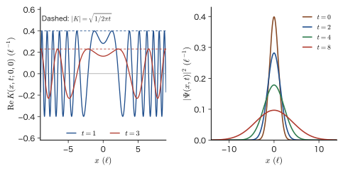
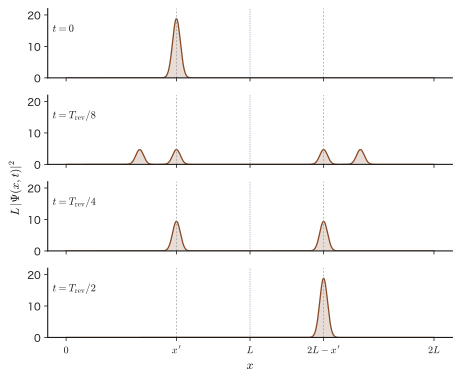
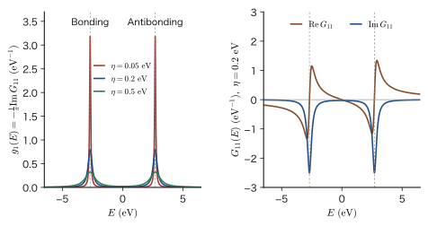

Chapter 55Propagators and an Introduction to Green's Functions — Retarded Green's Function, Local Density of States, and Lifetimes
What does the image of a scanning tunneling microscope (STM) show us about the sample? What determines the width of the resonance level of a quantum dot? How is the lifetime of an excited state connected to Fermi's golden rule of Chapter 51? A single tool answers all of these questions: the Green's function. In this chapter we build this tool step by step from the time evolution learned in the preceding chapters.
In the preceding chapters we saw that the solution of the time-dependent Schrödinger equation can be written as a superposition of stationary states, $\Psi(x,t)=\sum_nA_n\,\psi_n(x)\,e^{-iE_nt/\hbar}$, and that the weights are fixed by the wave function at time $0$ as $A_n=\int\psi_n^*(x')\,\Psi(x',0)\,\dd x'$ (Chapter 49). These two equations can in fact be combined into one. Putting the integral for $A_n$ inside the sum gives the form $\Psi(x,t)=\int K(x,t;x',0)\,\Psi(x',0)\,\dd x'$, which can be read as “multiplying the wave function at time $0$ by a kernel $K$ and integrating gives the wave function at time $t$.” This kernel $K$ is the propagator. $K(x,t;x',0)$ is precisely the wave function at time $t$ of a particle that was located exactly at the position $x'$ at time $0$. Just as in Huygens' principle, it gives the picture in which the waves emitted from every point at time $0$ interfere to form the waveform at time $t$.
Another point of view is the Green's function. In classical mechanics, the motion of a damped oscillator driven by an external force $F(t)$ can be written as $x(t)=\int G(t-t')F(t')\,\dd t'$ by superposing “the response $G(t-t')$ to an impulsive force (a force in the form of a $\delta$ function) applied at time $t'$” (see the damped oscillation in AD 03, Chapter 7, Section 7.3, and the method of variation of parameters in AD 02, Chapter 36, Section 36.1). Quantum mechanics has the same structure: multiplying the propagator by the step function $\theta(t)$ so as to build in causality (the effect appears only after the cause) gives the retarded Green's function $K^{\mathrm R}(t)=-\tfrac{i}{\hbar}\theta(t)\,e^{-i\hat{H}t/\hbar}$. Fourier transforming this with respect to time gives a function of the energy, $\hat{G}(E)=(E-\hat{H}+i\eta)^{-1}$. The eigenenergies of $\hat{H}$ appear as the poles of this function (the points where the denominator becomes $0$).
The Green's function in the energy representation contains two quantities that can be used directly in materials science. One is the local density of states (LDOS), which is obtained from the imaginary part of $\hat{G}$ and corresponds to the brightness of the image of a scanning tunneling microscope (STM). The other is the self-energy $\Sigma(E)$: its real part gives the shift of a level (the second-order perturbation of Part V), and its imaginary part gives the lifetime of the level, in complete agreement with Fermi's golden rule of Chapter 51. The phenomenon in which the resonance level of a quantum dot or of an adsorbed atom is broadened by its coupling to the electrodes can also be explained from here.
This chapter is the summary of Part IX (Time-Dependent Quantum Mechanics) and also the foundation for making full use of Green's functions in Linear Response Theory (AD 08) and Density Functional Theory (AD 07). We treat only the one-particle Green's function; as for the Green's function of a system containing many electrons (the correlation function of field operators), the last section only gives an overview of “what stays the same and what is added.”
- The definition and properties of the propagator $K(x,t;x',t')=\sum_n\psi_n(x)\psi_n^*(x')e^{-iE_n(t-t')/\hbar}$, the free-particle propagator $K=\sqrt{m/2\pi i\hbar t}\,\exp[im(x-x')^2/2\hbar t]$ and the spreading of a wave packet, and the mirror image $K=-\delta(x+x'-2L)$ at half the period in the infinite well
- The fact that the retarded Green's function $K^{\mathrm R}(t)=-\tfrac{i}{\hbar}\theta(t)e^{-i\hat{H}t/\hbar}$ satisfies $(i\hbar\partial_t-\hat{H})K^{\mathrm R}=\delta(t)$, its correspondence with the Green's function of the classical damped oscillator, and causality and the positions of the poles
- The derivation of $\hat{G}(E)=(E-\hat{H}+i\eta)^{-1}$ from the Fourier transform and the convergence factor $\eta$ (a positive infinitesimal), and the use of Dirac's identity $1/(x+i\eta)=\mathrm{P}(1/x)-i\pi\delta(x)$ to obtain the spectral function, the density of states, and the local density of states $g(\bm{r},E)=-\tfrac1\pi\mathrm{Im}\,G(\bm{r},\bm{r};E)$
- The Green's function $G=-\tfrac{im}{\hbar^2k}e^{ik|x-x'|}$ of the one-dimensional free particle, the bonding and antibonding peaks of the $\mathrm{H_2}$ molecule, the surface Green's function $g_{\mathrm s}(E)=\bigl(E-i\sqrt{4t^2-E^2}\bigr)/2t^2$ of a semi-infinite chain, and the statement that “the density of states at the edge is twice that in the interior”
- The Dyson equation $\hat{G}=\hat{G}_0+\hat{G}_0\hat{V}\hat{G}$; $G_{ii}=1/(E-E_i-\Sigma(E))$ for the coupling of a level to a continuum of levels; $\mathrm{Im}\,\Sigma=-\pi|V|^2g(E)$ and $\hbar w=-2\,\mathrm{Im}\,\Sigma$ (agreement with Fermi's golden rule); and $\Gamma=6.28\ \mathrm{meV}$, $\tau=105\ \mathrm{fs}$
- Many-body Green's functions (the Lehmann representation, and the Fetter–Walecka definition $iG=\langle T[\hat{\psi}\hat{\psi}^\dagger]\rangle$) and their correspondence with the conventions of this book, the difference in sign from AD 08 ($\hat{H}_{\mathrm{ext}}=+f\hat{B}$), and a map of the whole of Part IX
Source notes: This chapter supplements material that is not in the original notes. Related notes: Yasuhide Mochizuki, “Physics Notes: Quantum Mechanics 3,” pp. 69–71 (the general solution $\Psi=\sum_nA_n\psi_ne^{-iE_nt/\hbar}$).
55.1 The Propagator of the Wave Function — From the Waveform at Time $0$ to the Waveform at Time $t$
55.1.1 Moving the integral for the expansion coefficient inside the sum
Suppose the Hamiltonian $\hat{H}$ does not depend on time, that its eigenfunctions satisfy $\hat{H}\psi_n=E_n\psi_n$, and that they are orthonormal, $\int\psi_m^*\psi_n\,\dd x=\delta_{mn}$ (We write this for the case of discrete eigenvalues. For continuous eigenvalues, read the sum $\sum_n$ as an integral $\int\dd n$; the free particle in Section 55.1.2 is an example. For a general eigenstate the numbering $n=0,1,2,\dots$ may start from either zero or one, but for a particle in a box it is $n=1,2,\dots$, as in Chapter 10). As we saw in Chapter 49, when the wave function $\Psi(x,t')$ at time $t'$ is known, the wave function at time $t\,(>t')$ is given by the superposition of the stationary states $\psi_n(x)\,e^{-iE_n(t-t')/\hbar}$,
\begin{equation} \Psi(x,t)=\sum_nA_n\,\psi_n(x)\,e^{-iE_n(t-t')/\hbar},\qquad A_n=\int_{-\infty}^{\infty}\psi_n^*(x')\,\Psi(x',t')\,\dd x' \label{eq:55-An} \end{equation}(setting $t=t'$ gives $\Psi(x,t')=\sum_nA_n\psi_n(x)$, so $A_n$ is the expansion coefficient with respect to $\psi_n$. The expression for $A_n$ is obtained by multiplying both sides of this equation by $\psi_n^*$, integrating, and using orthonormality). We substitute the right-hand expression of Eq. \eqref{eq:55-An} into the left-hand one. The integration variable is written $x'$ so that it is not confused with $x$. We interchange the sum and the integral (which is allowed if the wave function is sufficiently smooth), leave the wave function $\Psi(x',t')$ at time $t'$ inside the integral rather than taking it outside, and collect only the part that depends on $n$ into the sum. This gives
$$ \Psi(x,t)=\int_{-\infty}^{\infty}\left[\sum_n\psi_n(x)\,\psi_n^*(x')\,e^{-iE_n(t-t')/\hbar}\right]\Psi(x',t')\,\dd x' $$The contents of the square brackets are determined by the eigenfunctions and eigenvalues alone and do not depend on the initial state $\Psi(x',t')$. We give this a name.
Definition 55.1: Propagator
For the eigenfunctions $\psi_n$ and eigenvalues $E_n$ of $\hat{H}$, the function
\begin{equation} K(x,t;x',t')=\sum_n\psi_n(x)\,\psi_n^*(x')\,e^{-iE_n(t-t')/\hbar} \label{eq:55-K} \end{equation}is called the propagator (or the kernel of the Schrödinger equation). In Dirac notation, it is the matrix element, in the position representation, of the time-evolution operator $\hat{U}_{\mathrm S}(t,t')=\sum_n\ket{n}e^{-iE_n(t-t')/\hbar}\bra{n}$ of Chapter 50,
\begin{equation} K(x,t;x',t')=\mel{x}{\hat{U}_{\mathrm S}(t,t')}{x'} \label{eq:55-Kbk} \end{equation}(that $\psi_n(x)=\braket{x}{n}$ and $\psi_n^*(x')=\braket{n}{x'}$ was explained in Chapter 10, Section 10.6. Here $\ket{x}$ is the position eigenket, and it satisfies $\braket{x}{x'}=\delta(x-x')$ and $\int\ket{x'}\bra{x'}\dd x'=1$).
Theorem 55.1: Time evolution by the propagator
From the wave function $\Psi(x',t')$ at time $t'$, the wave function at time $t\,(>t')$ is given by
\begin{equation} \Psi(x,t)=\int_{-\infty}^{\infty}K(x,t;x',t')\,\Psi(x',t')\,\dd x' \label{eq:55-psiK} \end{equation}.
Equation \eqref{eq:55-psiK} is nothing but the rearrangement we saw above. The two-step procedure of Chapter 49, “find the coefficients $A_n$ by integration, multiply them by phase factors, and add up,” has been condensed into the single step “multiply by $K$ and integrate.” Since $\int K\Psi\,\dd x'$ must have the same dimension as $\Psi$, the dimension of $K$ is the reciprocal of a length (in one dimension). Indeed, $\psi_n\psi_n^*$ has the dimension of the reciprocal of a length.
Intuition: $K(x,t;x',t')$ is the wave function at time $t$ of “a particle that was at $x'$”
Suppose that at time $t'$ the particle is located exactly at position $x_0$. The wave function is $\Psi(x',t')=\delta(x'-x_0)$. Substituting this into Eq. \eqref{eq:55-psiK}, the property of the $\delta$ function gives $\Psi(x,t)=K(x,t;x_0,t')$. Therefore $K(x,t;x_0,t')$ is “the wave function at time $t$ of a particle that was localized at $x_0$ at time $t'$.” A general initial state is $\Psi(x',t')=\int\Psi(x_0,t')\,\delta(x'-x_0)\,\dd x_0$, a superposition of states localized like $\delta$ functions, so the wave function at time $t$ is the sum of the waves $K(x,t;x_0,t')$ spreading out from each point $x_0$, each multiplied by the weight $\Psi(x_0,t')$. This has the same structure as Huygens' principle, according to which the secondary wavelets emitted from each point of a wave interfere to form the next wavefront.
However, the $\delta$ function is a state that cannot be normalized (its integral is $1$, but the integral of its square diverges), so $K$ cannot be normalized in the ordinary sense; rather than a “function,” it is a distribution, which acquires meaning only inside an integral. Indeed, as we shall see in a later example, when $t$ takes a special value such as the revival time, $K$ becomes the $\delta$ function itself.
Theorem 55.2: Properties of the propagator
For $t\gt s\gt t'$ the following hold.
- Initial condition: $K(x,t';x',t')=\delta(x-x')$.
- Schrödinger equation: $i\hbar\,\pdiff{}{t}K(x,t;x',t')=\hat{H}_xK(x,t;x',t')$ ($\hat{H}_x$ is $\hat{H}$ acting on $x$).
- Composition rule: $K(x,t;x',t')=\displaystyle\int_{-\infty}^{\infty}K(x,t;y,s)\,K(y,s;x',t')\,\dd y$.
- Complex conjugate: $K(x,t;x',t')^*=K(x',t';x,t)$. Here the right-hand side is the same Eq. \eqref{eq:55-K} with the order of the times reversed (propagation back into the past).
- Dependence on the time difference only: since $\hat{H}$ does not depend on time, $K$ is a function of $t-t'$ only.
Proof
(1) Setting $t=t'$ gives $e^{-iE_n\cdot0}=1$, and $K=\sum_n\psi_n(x)\psi_n^*(x')=\delta(x-x')$. The last equality is the expression, in terms of the kernel, of the completeness of the eigenfunctions (the fact that any function can be expanded in the $\psi_n$). Indeed, for any $f$ we have $\int\bigl[\sum_n\psi_n(x)\psi_n^*(x')\bigr]f(x')\,\dd x'=\sum_n\psi_n(x)\int\psi_n^*f\,\dd x'=\sum_nc_n\psi_n(x)=f(x)$.
(2) For each term $\psi_n(x)e^{-iE_n(t-t')/\hbar}$ of Eq. \eqref{eq:55-K}, applying $i\hbar\partial_t$ brings down $E_n$, and $E_n\psi_n(x)=\hat{H}_x\psi_n(x)$. It remains only to take the sum.
(3) Substituting Eq. \eqref{eq:55-K} into the right-hand side gives $\displaystyle\sum_{n,m}\psi_n(x)\,e^{-iE_n(t-s)/\hbar}\left[\int\psi_n^*(y)\,\psi_m(y)\,\dd y\right]e^{-iE_m(s-t')/\hbar}\,\psi_m^*(x')$. By orthonormality the square bracket is $\delta_{nm}$, and the exponent becomes $e^{-iE_n[(t-s)+(s-t')]/\hbar}=e^{-iE_n(t-t')/\hbar}$, so the result agrees with the left-hand side.
(4) Taking the complex conjugate of Eq. \eqref{eq:55-K} gives $\sum_n\psi_n^*(x)\psi_n(x')e^{+iE_n(t-t')/\hbar}$, which is Eq. \eqref{eq:55-K} with $x\leftrightarrow x'$ and $t\leftrightarrow t'$ interchanged. (5) In Eq. \eqref{eq:55-K}, the times appear only in the form $t-t'$.
∎
The composition rule (3) means that the propagation “from time $t'$ to $t$” equals the product of the propagation “from $t'$ to an intermediate time $s$” and the propagation “from $s$ to $t$,” summed over all intermediate positions $y$. This is the group property of the time-evolution operator, $\hat{U}_{\mathrm S}(t,t')=\hat{U}_{\mathrm S}(t,s)\hat{U}_{\mathrm S}(s,t')$ (Chapter 50, Section 50.1), written in the position representation (insert $\int\ket{y}\bra{y}\dd y=1$ in between). Property (4) is the position representation of the unitarity of the time-evolution operator, $\hat{U}_{\mathrm S}^\dagger(t,t')=\hat{U}_{\mathrm S}(t',t)$.
55.1.2 The propagator of a free particle
As the simplest example, consider a one-dimensional free particle with no potential ($V=0$, $\hat{H}=\hat{p}^2/2m$). The eigenfunctions are plane waves; following the continuum normalization of momentum (the conventions of this book), $\psi_p(x)=e^{ipx/\hbar}/\sqrt{2\pi\hbar}$, and the eigenvalue is $E_p=p^2/2m$. Since the eigenvalues are continuous, the sum in Eq. \eqref{eq:55-K} becomes an integral over $p$. Taking the initial time to be $t'=0$, we obtain
\begin{equation} K(x,t;x',0)=\int_{-\infty}^{\infty}\frac{\dd p}{2\pi\hbar}\,\exp\left[\frac{ip(x-x')}{\hbar}-\frac{ip^2t}{2m\hbar}\right] \label{eq:55-Kint} \end{equation}The exponent is a quadratic expression in $p$, so the integral can be evaluated as a Gaussian integral (University Mathematics, Chapter 30, Section 30.4).
Derivation: $K$ for a free particle
Let $R=x-x'$. We complete the square in the exponent with respect to $p$:
$$ -\frac{it}{2m\hbar}p^2+\frac{iR}{\hbar}p=-\frac{it}{2m\hbar}\left(p-\frac{mR}{t}\right)^2+\frac{imR^2}{2\hbar t} $$(expanding the right-hand side gives $-\frac{it}{2m\hbar}p^2+\frac{iR}{\hbar}p-\frac{imR^2}{2\hbar t}+\frac{imR^2}{2\hbar t}$, which agrees with the left-hand side). Shifting the integration variable by $p\to p+mR/t$, what remains is a Gaussian integral with a complex coefficient,
$$ \int_{-\infty}^{\infty}e^{-ap^2}\,\dd p=\sqrt{\frac{\pi}{a}},\qquad a=\frac{it}{2m\hbar} $$Here $a$ is purely imaginary, with real part $0$, so the integral does not converge absolutely; like the Fresnel integral, it converges only conditionally, while oscillating. We define it as the limit $\mathrm{Re}\,a\to+0$ of the formula that holds for $a$ with positive real part (this is the same idea as the adiabatic switching factor $\eta$ introduced later, and it amounts to reading $t\to t-i0$). Since $a=\frac{t}{2m\hbar}e^{i\pi/2}$, we have $\sqrt{\pi/a}=\sqrt{2\pi m\hbar/t}\;e^{-i\pi/4}$ (for $t\gt0$). Therefore,
$$ K(x,t;x',0)=\frac{1}{2\pi\hbar}\sqrt{\frac{2\pi m\hbar}{t}}\,e^{-i\pi/4}\,e^{imR^2/2\hbar t}=\sqrt{\frac{m}{2\pi\hbar t}}\,e^{-i\pi/4}\,e^{imR^2/2\hbar t} $$(the coefficient is $\frac{1}{2\pi\hbar}\sqrt{\frac{2\pi m\hbar}{t}}=\sqrt{\frac{2\pi m\hbar}{4\pi^2\hbar^2t}}=\sqrt{\frac{m}{2\pi\hbar t}}$).
∎
Theorem 55.3: The propagator of a free particle
The propagator of a one-dimensional free particle (mass $m$) is, for $t\gt0$, given by
\begin{equation} K(x,t;x',0)=\sqrt{\frac{m}{2\pi i\hbar t}}\;\exp\left[\frac{im(x-x')^2}{2\hbar t}\right],\qquad \sqrt{\frac{1}{i}}=e^{-i\pi/4} \label{eq:55-Kfree} \end{equation}If the initial time is $t'$, make the replacement $t\to t-t'$.
Let us check in three ways that this formula is correct.
- Dimension: the unit of $m/(\hbar t)$ is $\dfrac{\mathrm{kg}}{\mathrm{J\,s\cdot s}}=\dfrac{\mathrm{kg}}{\mathrm{kg\,m^2\,s^{-1}\cdot s}}=\dfrac{1}{\mathrm{m}^2}$ (note that $\hbar t$ has units $\mathrm{J\,s^2}=\mathrm{kg\,m^2}$), so $\sqrt{m/2\pi\hbar t}$ is the reciprocal of a length.
- Schrödinger equation: differentiating $\ln K=-\tfrac12\ln t+\dfrac{imR^2}{2\hbar t}+\text{constant}$ gives $\partial_tK=K\Bigl(-\dfrac{1}{2t}-\dfrac{imR^2}{2\hbar t^2}\Bigr)$, $\partial_xK=K\dfrac{imR}{\hbar t}$, and $\partial_x^2K=K\Bigl[\Bigl(\dfrac{imR}{\hbar t}\Bigr)^2+\dfrac{im}{\hbar t}\Bigr]=K\Bigl[-\dfrac{m^2R^2}{\hbar^2t^2}+\dfrac{im}{\hbar t}\Bigr]$. Therefore $-\dfrac{\hbar^2}{2m}\partial_x^2K=K\Bigl[\dfrac{mR^2}{2t^2}-\dfrac{i\hbar}{2t}\Bigr]$, which agrees with $i\hbar\partial_tK=K\Bigl[-\dfrac{i\hbar}{2t}+\dfrac{mR^2}{2t^2}\Bigr]$.
- The limit $t\to+0$: from the Fresnel integral $\int_{-\infty}^{\infty}e^{imR^2/2\hbar t}\,\dd R=\sqrt{2\pi i\hbar t/m}$ we get $\int K\,\dd x=1$ for every $t$. The absolute value $|K|=\sqrt{m/2\pi\hbar t}$ does not depend on $x$, but as $t\to0$ the phase $mR^2/2\hbar t$ oscillates violently for $R\ne0$, and in an integral with a smooth function $f$ only the neighborhood of $R=0$ survives, so that $\int K f\,\dd x'\to f(x)$. That is, $K\to\delta(x-x')$, which agrees with (1) of Theorem 55.2.
Intuition: The phase of $K$ is the classical action, and the absolute value is constant because it “contains every momentum”
In the exponent of Eq. \eqref{eq:55-Kfree}, the phase $\dfrac{m(x-x')^2}{2\hbar t}=\dfrac{S_{\mathrm{cl}}}{\hbar}$ has the numerator $S_{\mathrm{cl}}=\dfrac{m(x-x')^2}{2t}$, which is none other than the classical action $\displaystyle\int_0^t\tfrac12mv^2\,\dd t=\tfrac12mv^2t$ of a free particle of mass $m$ moving uniformly (with speed $v=(x-x')/t$) from position $x'$ to position $x$ in time $t$. Moreover, the local wavenumber obtained by differentiating the phase with respect to $x$, $k=\dfrac{m(x-x')}{\hbar t}=\dfrac{mv}{\hbar}$, is the wavenumber of the momentum corresponding to “the classical velocity needed to arrive at $x$ from $x'$ in time $t$.” That is, the wavelength of the wave seen at $x$ is determined by the velocity of a particle that can classically reach that point (Figure 55.1 (a): the larger $|x|$ is, the shorter the wavelength).
On the other hand, the absolute value $|K|^2=m/(2\pi\hbar t)$ is independent of $x$ because the $\delta$-function initial state contains every momentum with the same weight ($|\phi(p)|^2=1/2\pi\hbar$, a constant), so particles of any speed appear with the same probability. Since the spread in momentum is infinite, the position spreads out immediately.

Example 55.1: Deriving the spreading of a Gaussian wave packet from $K$
The wave function at time $0$ is $\Psi(x',0)=(2\pi\sigma_0^2)^{-1/4}e^{-x'^2/4\sigma_0^2}$ (centered at $x=0$, with position standard deviation $\sigma_0$ and $k_0=0$). From Eq. \eqref{eq:55-psiK} and Eq. \eqref{eq:55-Kfree}, find $\Psi(x,t)$ and $\sigma(t)$. Also find $\sigma(t)$ for $t=2,4,8$ with $\hbar=m=\sigma_0=1$.
Solution. The exponent of the integrand of $\Psi(x,t)=\displaystyle\int K(x,t;x',0)\Psi(x',0)\,\dd x'$ can be rearranged as a quadratic in $x'$: $$ \frac{im(x-x')^2}{2\hbar t}-\frac{x'^2}{4\sigma_0^2}=-A\,x'^2+B\,x'+C,\qquad A=\frac{1}{4\sigma_0^2}-\frac{im}{2\hbar t},\quad B=-\frac{imx}{\hbar t},\quad C=\frac{imx^2}{2\hbar t} $$ (we expanded $(x-x')^2=x^2-2xx'+x'^2$ and collected the $x'^2$, $x'$, and constant terms). Let $\tilde{t}=\dfrac{\hbar t}{2m\sigma_0^2}$ (the dimensionless time; we write it as $\tilde{t}$ so that it is not confused with the step function $\theta(t)$). Then $A=\dfrac{1}{4\sigma_0^2}\Bigl(1-\dfrac{i}{\tilde{t}}\Bigr)=\dfrac{\tilde{t}-i}{4\sigma_0^2\tilde{t}}$. Using the Gaussian integral with a complex coefficient, $\int e^{-Ax'^2+Bx'}\dd x'=\sqrt{\pi/A}\,e^{B^2/4A}$ ($\mathrm{Re}\,A\gt0$), we find $\dfrac{B^2}{4A}=-\dfrac{m^2x^2}{4\hbar^2t^2A}=-\dfrac{m^2x^2\sigma_0^2\tilde{t}}{\hbar^2t^2(\tilde{t}-i)}=-\dfrac{mx^2}{2\hbar t\,(\tilde{t}-i)}$ (in the last step we used $\dfrac{m^2\sigma_0^2\tilde{t}}{\hbar^2t^2}=\dfrac{m}{2\hbar t}$). The whole exponent is $$ C+\frac{B^2}{4A}=\frac{mx^2}{2\hbar t}\left[i-\frac{1}{\tilde{t}-i}\right]=\frac{mx^2}{2\hbar t}\cdot\frac{i\tilde{t}}{\tilde{t}-i}=\frac{ix^2}{4\sigma_0^2(\tilde{t}-i)}=-\frac{x^2}{4\sigma_0^2(1+i\tilde{t})} $$ (we used $\dfrac{m}{2\hbar t}\tilde{t}=\dfrac{1}{4\sigma_0^2}$ and $\dfrac{i}{\tilde{t}-i}=\dfrac{i(\tilde{t}+i)}{\tilde{t}^2+1}=-\dfrac{1-i\tilde{t}}{1+\tilde{t}^2}=-\dfrac{1}{1+i\tilde{t}}$). The coefficient is $\sqrt{\dfrac{m}{2\pi i\hbar t}}\sqrt{\dfrac{\pi}{A}}=\sqrt{\dfrac{m}{2\pi i\hbar t}\cdot\dfrac{4\pi\sigma_0^2\tilde{t}}{\tilde{t}-i}}=\sqrt{\dfrac{1}{i(\tilde{t}-i)}}=\dfrac{1}{\sqrt{1+i\tilde{t}}}$ (we used $\dfrac{2m\sigma_0^2}{\hbar t}=\dfrac{1}{\tilde{t}}$ and wrote $i(\tilde{t}-i)=1+i\tilde{t}$). Therefore $$ \Psi(x,t)=\frac{(2\pi\sigma_0^2)^{-1/4}}{\sqrt{1+i\tilde{t}}}\exp\left[-\frac{x^2}{4\sigma_0^2(1+i\tilde{t})}\right] $$ and $\abs{\Psi}^2=\dfrac{1}{\sqrt{2\pi\sigma_0^2(1+\tilde{t}^2)}}\exp\Bigl[-\dfrac{x^2}{2\sigma_0^2(1+\tilde{t}^2)}\Bigr]$ (since $\mathrm{Re}\dfrac{1}{1+i\tilde{t}}=\dfrac{1}{1+\tilde{t}^2}$). The standard deviation is $\sigma(t)=\sigma_0\sqrt{1+\tilde{t}^2}=\sigma_0\sqrt{1+(t/\tau)^2}$ with $\tau=\dfrac{2m\sigma_0^2}{\hbar}$ ($\tilde{t}=t/\tau$), which agrees with the result obtained from the Fourier transform in Chapter 49 (Theorem 49.5). The result was obtained without the Fourier transform, from a single Gaussian integral of $K$.
For $\hbar=m=\sigma_0=1$ we have $\tau=2$, so $\sigma(t)=\sqrt{1+(t/2)^2}$, which gives $\sqrt2=1.414$ at $t=2$, $\sqrt5=2.236$ at $t=4$, and $\sqrt{17}=4.123$ at $t=8$.
Example 55.2: The composition rule for the free-particle $K$
Show that Eq. \eqref{eq:55-Kfree} satisfies the composition rule $\displaystyle\int K(x,t_1;y,0)\,K(y,t_2;x',0)\,\dd y=K(x,t_1+t_2;x',0)$ (it joins the time differences $t_1$ and $t_2$).
Solution. The exponent of the integrand is $\dfrac{im}{2\hbar}\Bigl[\dfrac{(x-y)^2}{t_1}+\dfrac{(y-x')^2}{t_2}\Bigr]$. Let $a=1/t_1$ and $b=1/t_2$, and use the identity $a(y-x)^2+b(y-x')^2=(a+b)(y-y_0)^2+\dfrac{ab}{a+b}(x-x')^2$, $y_0=\dfrac{ax+bx'}{a+b}=\dfrac{t_2x+t_1x'}{t_1+t_2}$ (that the right-hand side, once expanded, agrees with the left-hand side can be seen by comparing the coefficients of $y^2$, $y$, and the constant term). Since $\dfrac{ab}{a+b}=\dfrac{1}{t_1+t_2}$ and $a+b=\dfrac{t_1+t_2}{t_1t_2}$, the exponent becomes $\dfrac{im(t_1+t_2)}{2\hbar t_1t_2}(y-y_0)^2+\dfrac{im(x-x')^2}{2\hbar(t_1+t_2)}$. The Fresnel integral over $y$ is $\displaystyle\int e^{ic(y-y_0)^2}\dd y=\sqrt{\dfrac{i\pi}{c}}$ ($c=\dfrac{m(t_1+t_2)}{2\hbar t_1t_2}$), whose value is $\sqrt{\dfrac{2\pi i\hbar t_1t_2}{m(t_1+t_2)}}$. The coefficient is $\sqrt{\dfrac{m}{2\pi i\hbar t_1}}\sqrt{\dfrac{m}{2\pi i\hbar t_2}}=\dfrac{m}{2\pi i\hbar\sqrt{t_1t_2}}$ ($(1/\sqrt{i})^2=1/i$), and the product of this with the value of the Fresnel integral is $\dfrac{m}{2\pi i\hbar\sqrt{t_1t_2}}\sqrt{\dfrac{2\pi i\hbar t_1t_2}{m(t_1+t_2)}}=\sqrt{\dfrac{m}{2\pi i\hbar(t_1+t_2)}}$. From the above, the integral becomes $\sqrt{\dfrac{m}{2\pi i\hbar(t_1+t_2)}}\exp\Bigl[\dfrac{im(x-x')^2}{2\hbar(t_1+t_2)}\Bigr]=K(x,t_1+t_2;x',0)$, and the composition rule holds.
55.1.3 The propagator of the infinite well — a mirror image at half a period
Next, as an example with discrete eigenvalues, consider the infinite well of width $2L$ ($0\le x\le2L$) treated in Chapter 49. The eigenfunctions and energies are $\phi_n(x)=\sqrt{1/L}\,\sin\dfrac{n\pi x}{2L}$, $E_n'=n^2E_1'$, $E_1'=\dfrac{\pi^2\hbar^2}{8mL^2}$ ($n=1,2,\dots$). Substituting into Eq. \eqref{eq:55-K} and using the angular frequency of the lowest level, $\Omega=E_1'/\hbar$ (the initial time is $t'=0$; since $\theta$ is used for the step function in a later section, we write the dimensionless combination involving time as $\Omega t$), we obtain
\begin{equation} K(x,t;x',0)=\frac{1}{L}\sum_{n=1}^{\infty}\sin\frac{n\pi x}{2L}\,\sin\frac{n\pi x'}{2L}\;e^{-in^2\Omega t} \label{eq:55-Kwell} \end{equation}Because the time factor $e^{-in^2\theta}$ is proportional to $n^2$, the exponent becomes a simple number when the time $\theta$ takes a special value. Using the revival time of Chapter 49, $T_{\mathrm{rev}}=\dfrac{2\pi\hbar}{E_1'}=\dfrac{16mL^2}{\pi\hbar}$ ($\Omega t=2\pi$), let us write down $K$. The key is the relation $\phi_n(2L-x')=(-1)^{n+1}\phi_n(x')$, which holds when $n$ is an integer. Indeed, $\sin\dfrac{n\pi(2L-x')}{2L}=\sin\Bigl(n\pi-\dfrac{n\pi x'}{2L}\Bigr)=\sin n\pi\cos\dfrac{n\pi x'}{2L}-\cos n\pi\sin\dfrac{n\pi x'}{2L}=-(-1)^n\sin\dfrac{n\pi x'}{2L}$.
Theorem 55.4: Special times of the propagator of the infinite well
The propagator of the infinite well of width $2L$, Eq. \eqref{eq:55-Kwell}, takes the following forms for $0\lt x,x'\lt2L$.
\begin{align} K(x,T_{\mathrm{rev}};x',0)&=\delta(x-x') \label{eq:55-KT1}\\ K\Bigl(x,\frac{T_{\mathrm{rev}}}{2};x',0\Bigr)&=-\,\delta(x+x'-2L) \label{eq:55-KT2}\\ K\Bigl(x,\frac{T_{\mathrm{rev}}}{4};x',0\Bigr)&=\frac{1-i}{2}\,\delta(x-x')-\frac{1+i}{2}\,\delta(x+x'-2L) \label{eq:55-KT4} \end{align}That is, a particle that was localized at position $x'$ returns completely to its original position at $T_{\mathrm{rev}}$; at $T_{\mathrm{rev}}/2$ it appears, with the sign changed, at the position $2L-x'$ obtained by reflecting about the center $x=L$ of the well (the mirror image). At $T_{\mathrm{rev}}/4$ it splits into waves at two places, the original position and the mirror-image position, with probability $\tfrac12$ each.
Proof
Eq. \eqref{eq:55-KT1}: At $t=T_{\mathrm{rev}}$ we have $\Omega t=2\pi$ and $e^{-2\pi in^2}=1$, so $K=\dfrac1L\sum_n\sin\dfrac{n\pi x}{2L}\sin\dfrac{n\pi x'}{2L}=\sum_n\phi_n(x)\phi_n(x')=\delta(x-x')$ (Theorem 55.2 (1)).
Eq. \eqref{eq:55-KT2}: At $t=T_{\mathrm{rev}}/2$ we have $\Omega t=\pi$ and $e^{-in^2\pi}=(-1)^{n^2}=(-1)^n$ ($n^2$ and $n$ have the same parity). Using the relation above, $(-1)^n\phi_n(x')=-\phi_n(2L-x')$, we get $K=\sum_n(-1)^n\phi_n(x)\phi_n(x')=-\sum_n\phi_n(x)\phi_n(2L-x')=-\delta\bigl(x-(2L-x')\bigr)$.
Eq. \eqref{eq:55-KT4}: At $t=T_{\mathrm{rev}}/4$ we have $\Omega t=\pi/2$, and $e^{-in^2\pi/2}$ equals $1$ when $n$ is even ($n^2$ is a multiple of 4), and equals $e^{-i\pi/2}=-i$ when it is odd (since $n^2=1+8u$, it is $e^{-i\pi/2}\cdot e^{-4\pi iu}$). This can be written as $\dfrac{1-i}{2}+\dfrac{1+i}{2}(-1)^n$: in the even case it is $\dfrac{1-i}{2}+\dfrac{1+i}{2}=1$, and in the odd case it is $\dfrac{1-i}{2}-\dfrac{1+i}{2}=-i$. Therefore $K=\dfrac{1-i}{2}\sum_n\phi_n(x)\phi_n(x')+\dfrac{1+i}{2}\sum_n(-1)^n\phi_n(x)\phi_n(x')$, and it suffices to use the previous two results.
∎
Substituting Eq. \eqref{eq:55-KT2} into Eq. \eqref{eq:55-psiK} gives $\Psi(x,T_{\mathrm{rev}}/2)=-\Psi(2L-x,0)$ for any initial state. This restates the result of Theorem 49.4 of Chapter 49 (Section 49.5.1) in the language of the propagator. In Chapter 49 we verified this fact for a specific wave function after the box had expanded from $L$ to $2L$. Here we see that the reason “any initial state becomes a mirror image” is that $K$ becomes a $\delta$ function. Also, the phenomenon in which the wave splits into a finite number of images at times that are multiples of $T_{\mathrm{rev}}/8$ (Chapter 49, Section 49.5.2) can likewise be understood from the fact that $K$ becomes a sum of a finite number of $\delta$ functions.
Discussion: $K$ at $T_{\mathrm{rev}}/8$ — four images
At $t=T_{\mathrm{rev}}/8$ ($\Omega t=\pi/4$), $e^{-in^2\pi/4}$ is determined solely by the remainder of $n$ upon division by 4: it is $1$ for $n\equiv0$, $e^{-i\pi/4}$ for $n\equiv1,3$, and $-1$ for $n\equiv2$. This can be written as $\dfrac{e^{-i\pi/4}}{2}\bigl(1-(-1)^n\bigr)+\cos\dfrac{n\pi}{2}$ (for $n\equiv0$ it is $0+1=1$, for $n\equiv1,3$ it is $e^{-i\pi/4}\cdot1+0$, and for $n\equiv2$ it is $0+\cos\pi=-1$). The first term gives $\delta(x-x')$ and $\delta(x+x'-2L)$, and the second term, by the product-to-sum formula $\sin a\sin b\cos c=\tfrac14[\cos(a-b+c)+\cos(a-b-c)-\cos(a+b+c)-\cos(a+b-c)]$ and $\sum_{n\ge1}\cos\frac{n\pi u}{2L}=2L\sum_k\delta(u-4Lk)-\tfrac12$, gives $\delta$ functions at the positions obtained by shifting $x'$ by $L$. For $0\lt x'\lt L$ we obtain
$$ K\Bigl(x,\frac{T_{\mathrm{rev}}}{8};x',0\Bigr)=\frac{e^{-i\pi/4}}{2}\bigl[\delta(x-x')+\delta(x+x'-2L)\bigr]+\frac12\bigl[\delta(x-x'-L)-\delta(x+x'-L)\bigr] $$The particle appears at four places, $x'$, $2L-x'$, $x'+L$, and $L-x'$, with probability $\tfrac14$ each. This can be checked in Figure 55.2.

Example 55.3: The time at which the mirror image forms for an electron in a well
For an electron in an infinite well of width $2L=2\ \mathrm{nm}$ ($L=1\ \mathrm{nm}$), find $T_{\mathrm{rev}}$, the time at which the mirror image forms, and the time at which the electron splits into two. Where does an electron that was at position $x'=0.3\ \mathrm{nm}$ appear at the time of the mirror image?
Solution. $T_{\mathrm{rev}}=\dfrac{16mL^2}{\pi\hbar}=\dfrac{16\times9.109\times10^{-31}\times(10^{-9})^2}{\pi\times1.0546\times10^{-34}}=4.40\times10^{-14}\ \mathrm{s}=44.0\ \mathrm{fs}$. The time at which the mirror image forms is $T_{\mathrm{rev}}/2=22.0\ \mathrm{fs}$, and the time at which the electron splits into two is $T_{\mathrm{rev}}/4=11.0\ \mathrm{fs}$. From Eq. \eqref{eq:55-KT2}, the position of the mirror image is $2L-x'=2.0-0.3=1.7\ \mathrm{nm}$, which is the point symmetric to $x'=0.3\ \mathrm{nm}$ about the center of the well, $x=L=1.0\ \mathrm{nm}$. At $11.0\ \mathrm{fs}$ the electron appears at two places, $0.3\ \mathrm{nm}$ and $1.7\ \mathrm{nm}$, with probability $\tfrac12$ each ($\abs{(1-i)/2}^2=\abs{(1+i)/2}^2=\tfrac12$). The classical round-trip time for an electron in the lowest level ($n=1$) to go back and forth between the walls, with $v_1=\hbar k_1/m$ and $k_1=\pi/2L$, is $\dfrac{2\cdot2L}{v_1}=\dfrac{8mL^2}{\pi\hbar}=\dfrac{T_{\mathrm{rev}}}{2}=22.0\ \mathrm{fs}$, which coincides with the time at which the mirror image forms (for the $n$th level it is $T_{\mathrm{rev}}/2n$).
Example 55.4: Interference of the “split state” at a quarter period
Using Eq. \eqref{eq:55-KT4}, find the phase difference between the coefficients of the two peaks of the wave function at time $T_{\mathrm{rev}}/4$ for a particle localized at position $x'$ ($0\lt x'\lt L$). Also find the expectation value of the position in this state.
Solution. Putting $\Psi(x',0)=\delta(x'-x_0)$ into Eq. \eqref{eq:55-psiK} ($x_0$ is the position of localization), we get $\Psi(x,T_{\mathrm{rev}}/4)=\dfrac{1-i}{2}\,\delta(x-x_0)-\dfrac{1+i}{2}\,\delta(x+x_0-2L)$. The coefficients of the two peaks are $\dfrac{1-i}{2}=\dfrac{1}{\sqrt2}e^{-i\pi/4}$ and $-\dfrac{1+i}{2}=\dfrac{1}{\sqrt2}e^{i(\pi/4+\pi)}=\dfrac{1}{\sqrt2}e^{i5\pi/4}$, and the phase difference is $\dfrac{5\pi}{4}-\Bigl(-\dfrac{\pi}{4}\Bigr)=\dfrac{3\pi}{2}$, that is, $-\dfrac{\pi}{2}$ (modulo $2\pi$). The expectation value of the position is the average $\dfrac{x_0+(2L-x_0)}{2}=L$ of the positions of the two peaks, each with probability $\tfrac12$, so it is the center $L$ of the well regardless of $x_0$ (since the two peaks form at positions $x_0$ and $2L-x_0$, the expectation value is not the position of either peak). Such a superposition state spread over two places is sometimes called a “cat state,” by analogy with Schrödinger's cat (a superposition of a living state and a dead state). Similar phenomena, called fractional revivals, have been reported for wave packets of Rydberg atoms and for vibrational wave packets of molecules.
55.1.4 Relation to the path integral
Advanced Topic: An alternative representation of the propagator — Feynman's path integral
If we repeat the composition rule (Theorem 55.2 (3)) with $N-1$ intermediate times, $K(x,t;x',t')$ becomes an integral over $N-1$ intermediate positions. In the limit in which the time step is made infinitely fine, we obtain the sum over all paths $x(s)$ from the starting point $x'$ to the end point $x$ (the path integral), which can be written as follows (Feynman, 1948):
$$ K(x,t;x',t')=\int\mathcal{D}[x(s)]\;\exp\left(\frac{i}{\hbar}S[x(s)]\right),\qquad S[x(s)]=\int_{t'}^{t}\Bigl[\tfrac12m\dot{x}^2-V(x)\Bigr]\dd s $$Here $S$ is the action of classical mechanics, and all paths make contributions of the same magnitude, with the action $S/\hbar$ as their phase. When the action is a quadratic expression in the coordinates, as for the free particle and the harmonic oscillator, the result takes the form $K=(\text{prefactor})\,e^{iS_{\mathrm{cl}}/\hbar}$, whose phase is the classical action $S_{\mathrm{cl}}$. That the phase of Eq. \eqref{eq:55-Kfree} for the free particle was the classical action is an example of this. The propagator of the harmonic oscillator is $K(x,t;x',0)=\sqrt{\dfrac{m\omega}{2\pi i\hbar\sin\omega t}}\exp\Bigl\{\dfrac{im\omega}{2\hbar\sin\omega t}\bigl[(x^2+x'^2)\cos\omega t-2xx'\bigr]\Bigr\}$ (the Mehler kernel). In this book we only introduce the path integral by name, and from here on we use the representation in terms of energy eigenstates, Eq. \eqref{eq:55-K}.
55.2 The Retarded Green's Function — Response to an Impulsive Force and Causality
55.2.1 The Green's function of classical mechanics — response to an impulsive force
Let us first recall an example from classical mechanics. When an object of mass $m$ attached to a spring is driven by an external force $F(t)$ while subject to a resistive force $-\gamma\dot{x}$, the equation of motion is $m\ddot{x}+\gamma\dot{x}+m\omega_0^2x=F(t)$. This equation is linear in $x$, so superposition holds. Any external force can be regarded as a sum of impulsive forces applied at times $t'$, $F(t)=\int F(t')\,\delta(t-t')\,\dd t'$, so once we know the response $G(t)$ to a single impulsive force, the general response is obtained as $x(t)=\int G(t-t')F(t')\,\dd t'$. $G$ is the “response to a unit impulsive force” and is the solution of the following equation:
\begin{equation} m\ddot{G}+\gamma\dot{G}+m\omega_0^2G=\delta(t),\qquad G(t)=0\ (t\lt0) \label{eq:55-Gcl} \end{equation}Integrating the equation across $t=0$ gives $G(0^+)=0$ and $m\dot{G}(0^+)=1$ (a unit impulse increases the momentum by $1$), and the solution for $t\gt0$ is $G(t)=\theta(t)\,\dfrac{e^{-\gamma t/2m}\sin\omega_1t}{m\omega_1}$, $\omega_1=\sqrt{\omega_0^2-\gamma^2/4m^2}$ (this is the combination, chosen from the damped-oscillation solution in AD 03, Chapter 7, Section 7.3, that satisfies $G(0^+)=0$, $m\dot{G}(0^+)=1$). Here $\theta(t)$ is the unit step function ($1$ for $t\gt0$ and $0$ for $t\lt0$; University Mathematics, Chapter 31, Section 31.5), and it expresses the causality that “there is no response before the impulsive force.” This method is the same as the variation of parameters in AD 02, Chapter 36, Section 36.1, and it is treated in detail in Chapter 2 of Linear Response Theory (AD 08).
Quantum mechanics has the same structure. Consider the equation obtained by adding to the Schrödinger equation a term $S(t)$ (the source) that injects a wave function from outside:
\begin{equation} i\hbar\,\pdiff{\Psi}{t}-\hat{H}\Psi=S(t) \label{eq:55-source} \end{equation}$S(t)$ represents, for example, the process in which electrons are injected by tunneling from the tip of an STM into a sample, or the supply of electrons excited from outside, as a “term from which the wave function wells up.” For $S\ne0$, $\int\abs{\Psi}^2\dd x=1$ is not preserved: from Eq. \eqref{eq:55-source}, $\dfrac{\dd}{\dd t}\int\abs{\Psi}^2\dd x=\dfrac{2}{\hbar}\mathrm{Im}\int\Psi^*S\,\dd x$, and if the phase is aligned with the source, $\int\abs{\Psi}^2\dd x$ increases with time. This corresponds to the continued supply of electrons from outside (entering by tunneling from the tip), and it is an expedient that treats the phenomenon phenomenologically by reducing the whole (tip and sample) to a problem of the sample alone. For $S=0$, we recover the original time-dependent Schrödinger equation. The counterpart of the classical impulsive force is the source $S(t)=\delta(t)\ket{\varphi}$ that injects the state $\ket{\varphi}$ for just an instant, and we seek the response to it.
Definition 55.2: Retarded Green's function (retarded propagator)
For a time-independent $\hat{H}$,
\begin{equation} K^{\mathrm R}(t)=-\frac{i}{\hbar}\,\theta(t)\,e^{-i\hat{H}t/\hbar} \label{eq:55-KR} \end{equation}is called the retarded Green's function (the R stands for “retarded”). In the position representation, using the propagator of Eq. \eqref{eq:55-K},
\begin{equation} K^{\mathrm R}(x,t;x',t')=-\frac{i}{\hbar}\,\theta(t-t')\,K(x,t;x',t') \label{eq:55-KRx} \end{equation}holds. Since it depends only on the time difference $t-t'$, it is also written $K^{\mathrm R}(t-t')$.
Theorem 55.5: The equation for the retarded Green's function, and the response to a source
(1) $K^{\mathrm R}(t)$ satisfies the following equation and is $0$ for $t\lt0$.
\begin{equation} \bigl(i\hbar\,\partial_t-\hat{H}\bigr)K^{\mathrm R}(t)=\delta(t)\,\hat{1},\qquad K^{\mathrm R}(0^+)=-\frac{i}{\hbar}\hat{1} \label{eq:55-KReq} \end{equation}In the position representation, $\Bigl[i\hbar\partial_t+\dfrac{\hbar^2}{2m}\partial_x^2-V(x)\Bigr]K^{\mathrm R}(x,t;x',t')=\delta(t-t')\,\delta(x-x')$ holds.
(2) Among the solutions of Eq. \eqref{eq:55-source} in the presence of a source $S(t)$, the one with $\Psi=0$ before the source is applied is
This expression gives that solution.
Proof
(1) We use the product rule. The derivative of the step function is the $\delta$ function ($\theta'(t)=\delta(t)$), and the derivative of $e^{-i\hat{H}t/\hbar}$ is $i\hbar\partial_te^{-i\hat{H}t/\hbar}=\hat{H}e^{-i\hat{H}t/\hbar}$, so we have
$$ \bigl(i\hbar\partial_t-\hat{H}\bigr)\Bigl[-\frac{i}{\hbar}\theta(t)e^{-i\hat{H}t/\hbar}\Bigr]=-\frac{i}{\hbar}\,i\hbar\,\delta(t)\,e^{-i\hat{H}\cdot0/\hbar}-\frac{i}{\hbar}\theta(t)\underbrace{\bigl(i\hbar\partial_t-\hat{H}\bigr)e^{-i\hat{H}t/\hbar}}_{=0}=\delta(t)\,\hat{1} $$(Here $-\tfrac{i}{\hbar}\cdot i\hbar=1$, and since $\delta(t)$ is multiplied, we used the value at $t=0$, $e^0=1$.) $K^{\mathrm R}(0^+)=-\tfrac{i}{\hbar}\hat{1}$ follows by letting $t\to+0$ in Eq. \eqref{eq:55-KR}. For the equation in the position representation, substitute $\hat{H}=-\tfrac{\hbar^2}{2m}\partial_x^2+V(x)$ and use $\langle x|\hat{1}|x'\rangle=\delta(x-x')$.
(2) Applying $(i\hbar\partial_t-\hat{H})$ to Eq. \eqref{eq:55-resp}, and noting that $t$ appears only in $K^{\mathrm R}(t-t')$, we obtain from (1) $\int\delta(t-t')\,S(t')\,\dd t'=S(t)$. Since $K^{\mathrm R}(t-t')=0\ (t\lt t')$, we have $\Psi=0$ before the source is applied.
∎
The meaning of the factor $-i/\hbar$ in Eq. \eqref{eq:55-KReq} becomes clear if we look at the impulsive source $S(t)=\delta(t)\ket{\varphi}$. Integrating Eq. \eqref{eq:55-source} across $t=0$, the integral of $\hat{H}\Psi$ tends to $0$ for a finite $\Psi$, so $i\hbar\bigl[\Psi(0^+)-\Psi(0^-)\bigr]=\ket{\varphi}$. With $\Psi(0^-)=0$ we obtain $\Psi(0^+)=-\dfrac{i}{\hbar}\ket{\varphi}$, which coincides with $K^{\mathrm R}(0^+)\ket{\varphi}$. In other words, when the state $\ket{\varphi}$ is injected by an impulsive force (with its magnitude divided by $i\hbar$), the state $\ket{\varphi}$ thereafter evolves freely in time as $K^{\mathrm R}(t)\ket{\varphi}=-\tfrac{i}{\hbar}e^{-i\hat{H}t/\hbar}\ket{\varphi}$. This is the same as the classical $G(t)$ being “the free motion after the impulsive force.” The correspondence between the two is summarized in Table 55.1.
| Classical (damped oscillator) | Quantum (Schrödinger equation) | |
|---|---|---|
| Equation | $m\ddot{x}+\gamma\dot{x}+m\omega_0^2x=F(t)$ | $i\hbar\partial_t\Psi-\hat{H}\Psi=S(t)$ |
| Order of the time derivative | Second order | First order |
| Response to an impulsive force | $G(t)=\theta(t)\dfrac{e^{-\gamma t/2m}\sin\omega_1t}{m\omega_1}$ (real) | $K^{\mathrm R}(t)=-\dfrac{i}{\hbar}\theta(t)e^{-i\hat{H}t/\hbar}$ (complex) |
| General response | $x(t)=\displaystyle\int G(t-t')F(t')\dd t'$ | $\Psi(t)=\displaystyle\int K^{\mathrm R}(t-t')S(t')\dd t'$ |
| Condition at $t=0^+$ | $G=0$, $m\dot{G}=1$ | $K^{\mathrm R}=-i/\hbar$ |
| Direction of time | There is no response before the cause (the impulsive force): $\theta(t)$ | |
Example 55.5: The retarded Green's function of a two-level system — transfer of the electron in $\mathrm{H_2}$
For the Hückel model of the $\mathrm{H_2}$ molecule consisting of two atomic orbitals $\ket{1},\ket{2}$, $\hat{H}=\begin{pmatrix}0&\beta\\ \beta&0\end{pmatrix}$ (the energy of the atomic orbitals is set to $\alpha=0$; $\beta=-2.7\ \mathrm{eV}$), (1) find $K^{\mathrm R}(t)$ as a matrix, (2) verify Eq. \eqref{eq:55-KReq}, and (3) find the first time at which an electron injected on atom 1 has transferred completely to atom 2.
Solution. (1) The eigenstates are the bonding orbital $\ket{\mathrm b}=(\ket1+\ket2)/\sqrt2$ ($E_{\mathrm b}=\beta$) and the antibonding orbital $\ket{\mathrm a}=(\ket1-\ket2)/\sqrt2$ ($E_{\mathrm a}=-\beta$). With $\sigma_x=\begin{pmatrix}0&1\\1&0\end{pmatrix}$ we have $\hat{H}=\beta\sigma_x$, and since $\sigma_x^2=1$, $e^{-i\beta\sigma_xt/\hbar}=\cos\dfrac{\beta t}{\hbar}-i\sigma_x\sin\dfrac{\beta t}{\hbar}$ (in the exponential series, the even-order terms give $\cos$ and the odd-order terms give $-i\sigma_x\sin$). Therefore we have
$$ K^{\mathrm R}(t)=-\frac{i}{\hbar}\theta(t)\begin{pmatrix}\cos(\beta t/\hbar)&-i\sin(\beta t/\hbar)\\-i\sin(\beta t/\hbar)&\cos(\beta t/\hbar)\end{pmatrix} $$(2) For $t\gt0$, $K^{\mathrm R}=-\tfrac{i}{\hbar}\bigl(\cos\tfrac{\beta t}{\hbar}-i\sigma_x\sin\tfrac{\beta t}{\hbar}\bigr)$, so applying $i\hbar\partial_t$ gives $i\hbar\cdot\bigl(-\tfrac{i}{\hbar}\bigr)\tfrac{\beta}{\hbar}\bigl(-\sin\tfrac{\beta t}{\hbar}-i\sigma_x\cos\tfrac{\beta t}{\hbar}\bigr)=\tfrac{\beta}{\hbar}\bigl(-\sin\tfrac{\beta t}{\hbar}-i\sigma_x\cos\tfrac{\beta t}{\hbar}\bigr)$. On the other hand, $\hat{H}K^{\mathrm R}=\beta\sigma_x\bigl(-\tfrac{i}{\hbar}\bigr)\bigl(\cos\tfrac{\beta t}{\hbar}-i\sigma_x\sin\tfrac{\beta t}{\hbar}\bigr)=-\tfrac{\beta}{\hbar}\bigl(i\sigma_x\cos\tfrac{\beta t}{\hbar}+\sin\tfrac{\beta t}{\hbar}\bigr)$ (we used $\sigma_x^2=1$), and the two are equal. Hence $(i\hbar\partial_t-\hat{H})K^{\mathrm R}=0$ for $t\gt0$. For $t\lt0$, $K^{\mathrm R}=0$, and at $t=0$, $\theta'(t)=\delta(t)$ gives $i\hbar\cdot\bigl(-\tfrac{i}{\hbar}\bigr)\delta(t)\hat{1}=\delta(t)\hat{1}$. This verifies Eq. \eqref{eq:55-KReq}. (3) The state of the electron injected on atom 1 is $K^{\mathrm R}(t)\ket{1}\propto e^{-i\hat{H}t/\hbar}\ket{1}=\cos\dfrac{\beta t}{\hbar}\ket{1}-i\sin\dfrac{\beta t}{\hbar}\ket{2}$, so the probability of finding it on atom 2 is $P_2(t)=\sin^2\dfrac{\beta t}{\hbar}$. $P_2=1$ for the first time when $\abs{\beta}t/\hbar=\pi/2$, at which $t=\dfrac{\pi\hbar}{2\abs{\beta}}=\dfrac{\pi\times0.6582\ \mathrm{eV\,fs}}{2\times2.7\ \mathrm{eV}}=0.383\ \mathrm{fs}$. The period of $P_2$ is $\pi\hbar/\abs{\beta}=0.766\ \mathrm{fs}=h/(E_{\mathrm a}-E_{\mathrm b})$ (the period of the quantum beat corresponding to the $5.4\ \mathrm{eV}$ difference between the bonding and antibonding levels; Chapter 49, Section 49.3).
55.2.2 The harmonic oscillator — the classical Green's function and the quantum response function
The retarded Green's function $K^{\mathrm R}$ describes the propagation of the wave function (the amplitude) itself. In contrast, what gives the change in the mean value of a physical quantity (such as the position) when an external force is applied is the response function $\chi_{xx}(t)=\dfrac{i}{\hbar}\theta(t)\expval{\comm{\hat{x}_{\mathrm H}(t)}{\hat{x}_{\mathrm H}(0)}}$ derived in Chapter 54 (the external field couples through $\hat{H}_1=-F(t)\hat{x}$, and $\delta\expval{\hat{x}}(t)=\int\chi_{xx}(t-t')F(t')\,\dd t'$). The two are different objects, but they share the same structure of “response to an impulsive force,” and for a linear system (the harmonic oscillator) the quantum response function coincides with the classical Green's function. We verify this in the following example.
Example 55.6: The response function of the harmonic oscillator equals the classical Green's function
Find the response function $\chi_{xx}(t)$ of a quantum harmonic oscillator of mass $m$ and angular frequency $\omega_0$ ($\hat{H}=\hat{p}^2/2m+\tfrac12m\omega_0^2\hat{x}^2$), and compare it with the classical Green's function (Eq. \eqref{eq:55-Gcl} with $\gamma=0$). Find the period of an oscillator with $\hbar\omega_0=0.10\ \mathrm{eV}$, and write down $\expval{\hat{x}}(t)$ after an impulsive force $F(t)=I\,\delta(t)$ of impulse $I$ is applied at time $0$.
Solution. The Heisenberg-picture position operator is $\hat{x}_{\mathrm H}(t)=\hat{x}\cos\omega_0t+\dfrac{\hat{p}}{m\omega_0}\sin\omega_0t$ (Chapter 50, Section 50.3). From $\comm{\hat{p}}{\hat{x}}=-i\hbar$ and $\comm{\hat{x}}{\hat{x}}=0$, the commutator is $\comm{\hat{x}_{\mathrm H}(t)}{\hat{x}}=\dfrac{\sin\omega_0t}{m\omega_0}\comm{\hat{p}}{\hat{x}}=-\dfrac{i\hbar\sin\omega_0t}{m\omega_0}$, which is a number, not an operator. Therefore, for any state,
$$ \chi_{xx}(t)=\frac{i}{\hbar}\theta(t)\left(-\frac{i\hbar\sin\omega_0t}{m\omega_0}\right)=\theta(t)\,\frac{\sin\omega_0t}{m\omega_0} $$(Here $\tfrac{i}{\hbar}\cdot(-i\hbar)=1$.) This is exactly the same as the classical Green's function $G(t)=\theta(t)\dfrac{e^{-\gamma t/2m}\sin\omega_1t}{m\omega_1}$ with $\gamma=0$ ($\omega_1=\omega_0$). It is important that $\hbar$ has dropped out: for the harmonic oscillator, the response of the mean value to a force is the same in quantum mechanics as in classical mechanics (because Ehrenfest's theorem closes exactly when the force is a linear function of the coordinate; Chapter 9, Section 9.4). The period is $T=\dfrac{2\pi}{\omega_0}=\dfrac{2\pi\hbar}{\hbar\omega_0}=\dfrac{2\pi\times0.6582\ \mathrm{eV\,fs}}{0.10\ \mathrm{eV}}=41.4\ \mathrm{fs}$ ($\omega_0=0.1519\ \mathrm{fs^{-1}}$). After the impulsive force $F=I\delta(t)$, $\expval{\hat{x}}(t)=\displaystyle\int\chi_{xx}(t-t')I\delta(t')\,\dd t'=I\,\dfrac{\sin\omega_0t}{m\omega_0}$, which coincides with the motion $x(t)=\dfrac{I}{m\omega_0}\sin\omega_0t$ of a classical oscillator that acquires momentum $I$ at $t=0$. The damping $e^{-\gamma t/2m}$ appears when the oscillator is coupled to an environment. The quantum-mechanical analogue is the decay of a level, $e^{-wt/2}$, in Section 55.4.
Caution: $K^{\mathrm R}$ and $\chi$ are different quantities
$K^{\mathrm R}$ is a response of the wave function; it is a complex number containing $i$, and it corresponds to “injecting a state from outside.” $\chi$ is the response of the mean value of a physical quantity $\hat{A}$ to the external field $-F\hat{B}$, and it is a real function of time. What they have in common is that both satisfy causality because of $\theta(t)$, and that when they are Fourier-transformed in time they become functions with poles at the eigenenergies. In a many-body system, the quantity corresponding to $K^{\mathrm R}$ is “the expectation value of the anticommutator of field operators,” and the quantity corresponding to $\chi$ is “the expectation value of the commutator of physical quantities”; they become members of one family with the same form $\pm\tfrac{i}{\hbar}\theta(t)\langle[\,\cdot\,,\cdot\,]\rangle$ apart from the sign (the many-body $G^{\mathrm R}$ is the anticommutator with $-\tfrac{i}{\hbar}$, this book's $\chi$ is the commutator with $+\tfrac{i}{\hbar}$, and the response function $\chi^{R}$ of AD 08 is the commutator with $-\tfrac{i}{\hbar}$; Section 55.5).
55.2.3 Retarded and advanced — causality
The function obtained by using $-\theta(-t)$ in place of $\theta(t)$,
\begin{equation} K^{\mathrm A}(t)=+\frac{i}{\hbar}\,\theta(-t)\,e^{-i\hat{H}t/\hbar} \label{eq:55-KA} \end{equation}is called the advanced Green's function. Since the derivative of $\theta(-t)$ is $-\delta(t)$, we have $(i\hbar\partial_t-\hat{H})K^{\mathrm A}=\tfrac{i}{\hbar}\cdot i\hbar\cdot(-\delta(t))=\delta(t)$, so it satisfies the same equation as $K^{\mathrm R}$. The difference between the two is a solution of the homogeneous equation valid for all times, $K^{\mathrm R}-K^{\mathrm A}=-\tfrac{i}{\hbar}\bigl[\theta(t)+\theta(-t)\bigr]e^{-i\hat{H}t/\hbar}=-\tfrac{i}{\hbar}\hat{U}_{\mathrm S}(t)$. The solution of the equation $(i\hbar\partial_t-\hat{H})K=\delta(t)$ is ambiguous up to the addition of a homogeneous solution (free time evolution), and depending on which boundary condition we choose it becomes a different solution, such as $K^{\mathrm R}$ or $K^{\mathrm A}$.
$K^{\mathrm R}$ is the solution in which “the response appears only after the impulsive force,” and it satisfies causality. $K^{\mathrm A}$ is the solution in which “the response appears only before the impulsive force”; it represents the physically opposite causal relation, in which a future cause affects the present state. For actual responses we use $K^{\mathrm R}$ (Figure 55.3).
55.2.4 Conversion to the energy representation and the convergence factor $\eta$
Let us Fourier-transform the retarded Green's function with respect to time to make it a function of energy. As the Fourier-transform convention, this book uses $e^{+i\omega t}$ for the time kernel (the convention of Part IX; the same as in Linear Response Theory (AD 08)). Using the energy $E=\hbar\omega$,
\begin{equation} \tilde{f}(E)=\int_{-\infty}^{\infty}f(t)\,e^{iEt/\hbar}\,\dd t,\qquad f(t)=\int_{-\infty}^{\infty}\frac{\dd E}{2\pi\hbar}\,\tilde{f}(E)\,e^{-iEt/\hbar} \label{eq:55-FT} \end{equation}holds. Since the time kernel is $e^{+iEt/\hbar}$, a function with the phase $e^{-iEt/\hbar}$ (the phase of a stationary state) has a sharp peak at that $E$. However, if we try to transform $K^{\mathrm R}$ as it is, $e^{-iE_nt/\hbar}$ keeps oscillating without decaying as $t\to+\infty$, so the integral does not converge. We therefore attach a convergence factor.
Definition 55.3: The Green's function in the energy representation and the convergence factor $\eta$
\begin{equation} \hat{G}(E)=\int_{-\infty}^{\infty}\dd t\;e^{i(E+i\eta)t/\hbar}\,K^{\mathrm R}(t)=-\frac{i}{\hbar}\int_0^{\infty}\dd t\;e^{i(E+i\eta-\hat{H})t/\hbar} \label{eq:55-GE-def} \end{equation}Here $\eta$ is a positive infinitesimal ($\eta\gt0$, $\eta\to+0$; convergence factor, adiabatic switching factor). In this chapter $\eta$ has the dimension of energy (the $\eta$ in the adiabatic switching factor $e^{\eta t}$ of Chapter 51, Section 51.1, a factor previewed in Chapter 50, has the dimension of frequency, and the two are related by $\eta_{\text{energy}}=\hbar\eta_{\text{frequency}}$, but in both cases we take the limit $\eta\to+0$). The limit $\eta\to+0$ is taken after all the calculations are finished.
Theorem 55.6: $\hat{G}(E)=(E-\hat{H}+i\eta)^{-1}$
\begin{equation} \hat{G}(E)=\frac{1}{E-\hat{H}+i\eta} \label{eq:55-GE} \end{equation}This operator is called the resolvent of $\hat{H}$ evaluated at $E+i\eta$, or the retarded Green's function (in the energy representation).
Derivation
The $t$ dependence of the integrand of Eq. \eqref{eq:55-GE-def} is $e^{i(E+i\eta-\hat{H})t/\hbar}$. Acting on an eigenstate $\ket{n}$ of $\hat{H}$, it gives $e^{i(E+i\eta-E_n)t/\hbar}=e^{i(E-E_n)t/\hbar}\,e^{-\eta t/\hbar}$, which converges to $0$ as $t\to+\infty$ because $\eta\gt0$. Therefore, setting $a=E-E_n+i\eta$ (positive imaginary part), we have
$$ \int_0^{\infty}e^{iat/\hbar}\,\dd t=\left[\frac{\hbar}{ia}e^{iat/\hbar}\right]_0^{\infty}=-\frac{\hbar}{ia}=\frac{i\hbar}{a} $$(At $t=\infty$ we have $e^{iat/\hbar}\to0$, so only the value at the lower limit $t=0$ remains.) Hence, from $-\tfrac{i}{\hbar}\cdot\tfrac{i\hbar}{a}=\tfrac{1}{a}$, the $\ket{n}$ component is multiplied by $\dfrac{1}{E-E_n+i\eta}$. Writing this in the language of operators using $\hat{H}\ket{n}=E_n\ket{n}$, we obtain $\dfrac{1}{E-\hat{H}+i\eta}$.
∎
If we write Eq. \eqref{eq:55-GE} as $(E-\hat{H}+i\eta)\hat{G}(E)=\hat{1}$, it becomes the time-domain Eq. \eqref{eq:55-KReq}, $(i\hbar\partial_t-\hat{H})K^{\mathrm R}=\delta(t)$, with $i\hbar\partial_t\to E+i\eta$. Indeed, integrating $\partial_t$ by parts with the convention of Eq. \eqref{eq:55-FT}, we get $\int e^{iEt/\hbar}\,i\hbar\partial_tK^{\mathrm R}\,\dd t=-i\hbar\cdot\tfrac{iE}{\hbar}\int e^{iEt/\hbar}K^{\mathrm R}\,\dd t=E\hat{G}(E)$ (the boundary term vanishes because of the factor with $\eta$), and the transform of $\delta(t)$ is $1$. In other words, “$i\hbar\,\partial_t$ corresponds to $E$.”
55.2.5 Poles and causality
Let us carry out the inverse transform $K^{\mathrm R}(t)=\displaystyle\int\dfrac{\dd E}{2\pi\hbar}\,e^{-iEt/\hbar}\hat{G}(E)$ for the component $\dfrac{1}{E-E_n+i\eta}$ belonging to an eigenstate $\ket{n}$ of $\hat{H}$. The integrand $e^{-iEt/\hbar}/(E-E_n+i\eta)$ has a simple pole at $E=E_n-i\eta$ (just below the real axis) in the complex $E$ plane. For $t\gt0$, writing $E=E_R+iE_I$, we have $\abs{e^{-iEt/\hbar}}=e^{E_It/\hbar}$, so the integrand becomes exponentially small in the lower half-plane ($E_I\lt0$), and the integration contour along the real axis can be closed by a large semicircle in the lower half-plane (Cauchy's integral formula and the residue theorem; University Mathematics, Chapter 26, Section 26.4). Since the closed curve runs clockwise, we obtain $-2\pi i\times$(residue)$=-2\pi i\,e^{-i(E_n-i\eta)t/\hbar}$, and hence
$$ \int\frac{\dd E}{2\pi\hbar}\,\frac{e^{-iEt/\hbar}}{E-E_n+i\eta}=\frac{-2\pi i}{2\pi\hbar}\,e^{-iE_nt/\hbar}e^{-\eta t/\hbar}=-\frac{i}{\hbar}e^{-iE_nt/\hbar}\,e^{-\eta t/\hbar}\qquad(t\gt0) $$In the limit $\eta\to+0$ this returns to the value for $t\gt0$ in Eq. \eqref{eq:55-KR}. For $t\lt0$, the exponential factor becomes small in the upper half-plane, so the contour can be closed by a semicircle in the upper half-plane; but there is no pole in the upper half-plane, so the integral is $0$. This is $K^{\mathrm R}(t\lt0)=0$, that is, causality. To summarize,
Causality and the complex $E$ plane
The retarded Green's function $\hat{G}(E)$ has all its poles below the real axis (it is analytic in the upper half-plane). This is the same statement as the fact that $K^{\mathrm R}(t)=0\ (t\lt0)$ in the time domain (causality). The poles lie at $E_n-i\eta$ and approach the real axis as $\eta\to+0$. When we evaluate the Green's function on the real axis, we may read this as evaluating it at $E+i\eta$, slightly above the real axis, in place of $E$.
Caution: Differences in $i$ and sign from other books
Whether the kernel of the time Fourier transform is taken to be $e^{+i\omega t}$ or $e^{-i\omega t}$, and whether the definition of the Green's function carries $i$ or $-i$, differ from textbook to textbook. In a convention in which the imaginary unit is replaced throughout by $i\to-i$ (the phase of a stationary state is $e^{+iEt/\hbar}$ and the time kernel is $e^{-i\omega t}$, as in the $j$ convention of electrical engineering, for example), every equation becomes its complex conjugate, the poles lie in the upper half-plane, and the retarded Green's function takes the form $E-i\eta$ instead of $E+i\eta$. This is merely a difference in how the same physics is written. On the other hand, if we keep the phase $e^{-iEt/\hbar}$ of the stationary state and reverse only the Fourier kernel, the equations do not have the same content (the poles move to near $-E_n$). This book uses the convention that combines the phase $e^{-iEt/\hbar}$ (stationary states) with the time kernel $e^{+iEt/\hbar}$ (the same as in AD 08), and takes retarded = $+i\eta$. The resolvent $\hat{G}(z)=(z-\hat{H})^{-1}$ and the nonequilibrium Green's function $G^{r}(E)=[(E+i\eta)S-H]^{-1}$ of density functional theory (AD 07) follow the same convention (retarded = $+i\eta$).
Example 55.7: Magnitude of the convergence factor $\eta$ and numerical integration
For a single level with eigenenergy $E_n=0.30\ \mathrm{eV}$, find the value of $G(E)=\dfrac{1}{E-E_n+i\eta}$ at $E=0.55\ \mathrm{eV}$ and $\eta=0.050\ \mathrm{eV}$. Also, state a rule of thumb for the time at which to truncate the integral when the time integral in Eq. \eqref{eq:55-GE-def} is carried out numerically.
Solution. Since $E-E_n=0.25\ \mathrm{eV}$, we have $G=\dfrac{1}{0.25+0.05\,i}=\dfrac{0.25-0.05\,i}{0.25^2+0.05^2}=\dfrac{0.25-0.05\,i}{0.065}=3.846-0.769\,i\ \mathrm{eV^{-1}}$. The integrand of the time integral is $e^{i(E-E_n)t/\hbar}e^{-\eta t/\hbar}$, and its amplitude decays as $e^{-\eta t/\hbar}$. The decay time constant is $\hbar/\eta=\dfrac{0.6582\ \mathrm{eV\,fs}}{0.050\ \mathrm{eV}}=13.2\ \mathrm{fs}$, and it suffices to truncate the integral at a few times this value (for example, at $10$ times that value, $132\ \mathrm{fs}$, where $e^{-10}=4.5\times10^{-5}$). In fact, numerical integration from $t=0$ to $2000\ \mathrm{fs}$ reproduces $3.846-0.769\,i$. If $\eta$ is made smaller, the pole approaches the real axis, the peak becomes sharper, and the time at which the integral must be truncated becomes longer (proportional to $\hbar/\eta$). Conversely, keeping $\eta$ at a finite value amounts to giving each level a finite lifetime (the amplitude decay time $\hbar/\eta$), and this is often used in numerical calculations as a way of incorporating the experimental resolution and thermal and environmental broadening phenomenologically.
55.3 The Energy Representation and the Local Density of States — $\hat{G}(E)=(E-\hat{H}+i\eta)^{-1}$
55.3.1 Spectral representation — the poles are the eigenenergies
We expand Eq. \eqref{eq:55-GE} in the eigenstates $\ket{n}$ of $\hat{H}$ ($\hat{H}\ket{n}=E_n\ket{n}$). Using the completeness relation $\sum_n\ket{n}\bra{n}=\hat{1}$, a function of $\hat{H}$ is replaced by its value at each eigenvalue, so
\begin{equation} \hat{G}(E)=\sum_n\frac{\ket{n}\bra{n}}{E-E_n+i\eta},\qquad G(\bm{r},\bm{r}';E)=\sum_n\frac{\psi_n(\bm{r})\,\psi_n^*(\bm{r}')}{E-E_n+i\eta} \label{eq:55-Gspec} \end{equation}holds. The equation on the right is the one on the left with both sides sandwiched between position eigenkets ($\psi_n(\bm{r})=\braket{\bm{r}}{n}$), and $G(\bm{r},\bm{r}';E)$ is called the Green's function in the position representation. Where the eigenvalues are continuous, read $\sum_n$ as $\int\dd n$. The structure of Eq. \eqref{eq:55-Gspec} is that of the time-domain Eq. \eqref{eq:55-K} (the propagator) with $e^{-iE_n(t-t')/\hbar}$ replaced by $1/(E-E_n+i\eta)$. The dimension is the product of the reciprocal of energy and the reciprocal of the spatial dimension of $\psi_n\psi_n^*$ (in one dimension, the reciprocal of a length), so in one dimension it is “energy$^{-1}$ length$^{-1}$.”
Equation \eqref{eq:55-Gspec} tells us the following.
- The poles give the eigenenergies: $\hat{G}(E)$ has poles at $E=E_n-i\eta$. To find the eigenenergies of $\hat{H}$, it suffices to look for the poles of $\hat{G}$. For a state with a lifetime, the pole moves off the real axis to a complex position, and its imaginary part gives the lifetime (Section 55.4).
- Response to a point source: For $\eta\to+0$, $(E-\hat{H})\hat{G}(E)=\hat{1}$ holds, that is, $\bigl(E-\hat{H}_{\bm{r}}\bigr)G(\bm{r},\bm{r}';E)=\delta(\bm{r}-\bm{r}')$. This gives the wave function $G(\bm{r},\bm{r}';E)$ when a steady source of energy $E$ (an injection of particles) is placed at the point $\bm{r}'$ (the energy version of Theorem 55.5).
- Resolvent: $\hat{G}(z)=(z-\hat{H})^{-1}$ is the resolvent of $\hat{H}$ as a function of the complex number $z$. $z=E+i\eta$ gives the retarded Green's function, and $z=E-i\eta$ gives the advanced Green's function $\hat{G}^{\mathrm A}=\hat{G}^\dagger$.
55.3.2 Dirac's identity, the spectral function, and the local density of states
To examine the values of $\hat{G}(E)$ on the real axis ($\eta\to+0$), we split $1/(x+i\eta)$ into its real and imaginary parts.
Formula 55.1: Dirac's identity (the Sokhotski–Plemelj formula)
For a positive infinitesimal $\eta$, inside an integral
\begin{equation} \frac{1}{x+i\eta}=\mathrm{P}\frac{1}{x}-i\pi\,\delta(x) \label{eq:55-Dirac} \end{equation}holds. Here $\mathrm{P}$ denotes the principal value, defined by $\mathrm{P}\displaystyle\int\dfrac{f(x)}{x}\dd x=\lim_{\varepsilon\to+0}\Bigl(\int_{-\infty}^{-\varepsilon}+\int_{\varepsilon}^{\infty}\Bigr)\dfrac{f(x)}{x}\dd x$.
Proof
We split $\dfrac{1}{x+i\eta}=\dfrac{x-i\eta}{x^2+\eta^2}=\dfrac{x}{x^2+\eta^2}-i\,\dfrac{\eta}{x^2+\eta^2}$ into its real and imaginary parts. The imaginary part $\dfrac{\eta}{x^2+\eta^2}$ is a Lorentzian function of width $\eta$, and its integral is $\displaystyle\int_{-\infty}^{\infty}\dfrac{\eta\,\dd x}{x^2+\eta^2}=\bigl[\arctan(x/\eta)\bigr]_{-\infty}^{\infty}=\pi$. As $\eta\to0$ the width approaches $0$ while the integral stays at $\pi$, so it approaches $\pi\,\delta(x)$ (University Mathematics, Chapter 30, Section 30.5). The real part $\dfrac{x}{x^2+\eta^2}$ approaches the principal value, as follows. Let $f$ be a smooth function and fix a constant $a\gt0$. For $\abs{x}\lt a$ we can write $f(x)=f(0)+x\,h(x)$ ($h(x)=[f(x)-f(0)]/x$ is bounded). Since $f(0)\dfrac{x}{x^2+\eta^2}$ is an odd function, its integral over $-a\lt x\lt a$ is $0$. What remains is $\displaystyle\int_{-a}^{a}\dfrac{x^2h(x)}{x^2+\eta^2}\dd x$; since $\dfrac{x^2}{x^2+\eta^2}$ is at least $0$ and at most $1$ and approaches $1$ as $\eta\to0$, the limit is $\displaystyle\int_{-a}^{a}h(x)\dd x=\int_{-a}^{a}\dfrac{f(x)-f(0)}{x}\dd x=\mathrm{P}\!\!\int_{-a}^{a}\dfrac{f(x)}{x}\dd x$ ($f(0)/x$ is an odd function, and its principal value is $0$). For $\abs{x}\gt a$, $\Bigl|\dfrac{x}{x^2+\eta^2}-\dfrac1x\Bigr|=\dfrac{\eta^2}{\abs{x}(x^2+\eta^2)}\le\dfrac{\eta^2}{a^3}$, so the integrand approaches $f(x)/x$ uniformly (when $f(x)/x$ is integrable). Altogether, it approaches the principal value $\mathrm{P}(1/x)$ (Section 30.6).
∎
Example 55.8: Checking Dirac's identity
Using Eq. \eqref{eq:55-Dirac}, find the limit as $\eta\to+0$ of $\displaystyle I(\eta)=\int_{-\infty}^{\infty}\frac{e^{-x^2}(1+x)}{x+i\eta}\,\dd x$. Also, what happens to $I$ if we integrate numerically for $\eta=0.1,\ 0.01,\ 0.001$?
Solution. By Eq. \eqref{eq:55-Dirac}, $I\to\mathrm{P}\displaystyle\int\dfrac{e^{-x^2}(1+x)}{x}\dd x-i\pi\,e^{0}(1+0)$. The principal-value part is $\mathrm{P}\displaystyle\int\dfrac{e^{-x^2}}{x}\dd x+\int e^{-x^2}\dd x$; the first term is $0$ because it is a symmetric integral of an odd function, and the second term is $\sqrt{\pi}$. Therefore $I\to\sqrt{\pi}-i\pi=1.7725-3.1416\,i$. Numerical integration (with $-12\le x\le12$ divided finely) gives $1.491-2.816\,i$ for $\eta=0.1$, $1.741-3.106\,i$ for $\eta=0.01$, and $1.769-3.138\,i$ for $\eta=0.001$; as $\eta$ is made smaller, the values approach $1.7725-3.1416\,i$. Both the error in the real part and the error in the imaginary part decrease almost in proportion to $\eta$.
Applying Eq. \eqref{eq:55-Dirac} to Eq. \eqref{eq:55-Gspec}, the imaginary part becomes a $\delta$ function. We define the imaginary part of an operator as $\mathrm{Im}\,\hat{G}\equiv(\hat{G}-\hat{G}^\dagger)/2i$ (for the diagonal element $\mel{\bm{r}}{\hat{G}}{\bm{r}}$ it coincides with the ordinary imaginary part).
Definition 55.4: Spectral function, density of states, and local density of states
\begin{equation} \hat{A}(E)=-\frac{1}{\pi}\,\mathrm{Im}\,\hat{G}(E)=\sum_n\ket{n}\bra{n}\,\delta(E-E_n)=\delta(E-\hat{H}) \label{eq:55-A} \end{equation}is called the spectral function. From the diagonal elements of $\hat{A}(E)$ we obtain the following quantities.
\begin{align} g(E)&=\Tr\hat{A}(E)=\sum_n\delta(E-E_n) &&\text{(density of states)} \label{eq:55-dos}\\ g(\bm{r},E)&=\mel{\bm{r}}{\hat{A}(E)}{\bm{r}}=-\frac{1}{\pi}\mathrm{Im}\,G(\bm{r},\bm{r};E)=\sum_n\abs{\psi_n(\bm{r})}^2\delta(E-E_n) &&\text{(local density of states)} \label{eq:55-ldos}\\ g_i(E)&=\mel{i}{\hat{A}(E)}{i}=-\frac{1}{\pi}\mathrm{Im}\,G_{ii}(E) &&\text{(projected density of states)} \label{eq:55-pdos} \end{align}$g(\bm{r},E)$ is called the local density of states (LDOS). When $\ket{i}$ is an atomic orbital or a Wannier state (an orbital, built by superposing band wave functions, that is localized at one place like an atomic orbital), $g_i(E)$ expresses “how much that orbital contributes at each energy.”
Derivation
From Eq. \eqref{eq:55-Gspec}, $\hat{G}-\hat{G}^\dagger=\sum_n\ket{n}\bra{n}\Bigl[\dfrac{1}{E-E_n+i\eta}-\dfrac{1}{E-E_n-i\eta}\Bigr]=\sum_n\ket{n}\bra{n}\dfrac{-2i\eta}{(E-E_n)^2+\eta^2}$ (when we put the fractions over a common denominator, the numerator is $(E-E_n-i\eta)-(E-E_n+i\eta)=-2i\eta$). Dividing this by $2i$ and multiplying by $-1/\pi$, we obtain $\hat{A}=\sum_n\ket{n}\bra{n}\dfrac{\eta/\pi}{(E-E_n)^2+\eta^2}$, and as $\eta\to0$ the Lorentzian becomes $\delta(E-E_n)$ (the proof of Formula 55.1). The density of states is $\sum_n\delta(E-E_n)$, because $\Tr\ket{n}\bra{n}=1$.
∎
By completeness, the spectral function satisfies $\displaystyle\int_{-\infty}^{\infty}\hat{A}(E)\,\dd E=\sum_n\ket{n}\bra{n}=\hat{1}$ (conservation of the number of states). In particular, $\displaystyle\int g_i(E)\,\dd E=\braket{i}{i}=1$, so each projected density of states is a distribution of area $1$ (Exercise 55.4). Also, integrating $g(\bm{r},E)$ over all space gives $g(E)$. Conversely, the equation that builds $\hat{G}$ from $\hat{A}$,
\begin{equation} \hat{G}(E)=\int_{-\infty}^{\infty}\frac{\hat{A}(E')}{E-E'+i\eta}\,\dd E'=\mathrm{P}\!\!\int\frac{\hat{A}(E')}{E-E'}\dd E'-i\pi\hat{A}(E) \label{eq:55-Gfrom} \end{equation}holds (the first half follows because integrating with the $\delta$ function of Eq. \eqref{eq:55-A} returns Eq. \eqref{eq:55-Gspec}, and the second half follows from Formula 55.1). That the real part of $\hat{G}$ is determined by the principal-value integral of the imaginary part (the Hilbert transform, a transform of the form $\mathrm{P}\!\int f(x')/(x-x')\,\dd x'$) is the same statement as the Kramers–Kronig relations of Chapter 54.
Intuition: The local density of states is “how much of an electron of energy $E$ is at the point $\bm{r}$”
The density of states $g(E)$ is the number of eigenstates per unit energy (the free electron of Chapter 10, the chain of Chapter 41). The local density of states $g(\bm{r},E)$ counts that number weighted by the probability density $\abs{\psi_n(\bm{r})}^2$ of each eigenstate, and it expresses “how much of the states near energy $E$ exists at position $\bm{r}$.” Even in the same solid, the value differs with position (at an edge or in the interior, on an atom or between atoms). As in the following application, an STM image measures such a quantity at the position of the tip.
Application: An STM image is the local density of states
In the scanning tunneling microscope (STM), a bias voltage $V$ is applied between a sharply pointed tip and the sample, and the resulting tunneling current is measured. In the theory of Tersoff and Hamann (an approximation that regards the apex of the tip as an $s$ wave), the differential conductance $\dd I/\dd V$ is proportional to the local density of states $g(\bm{r}_{\mathrm{t}},E)$ of the sample at the position $\bm{r}_{\mathrm{t}}$ of the apex of the tip ($E$ is the energy corresponding to the voltage $V$) (derived in Chapter 51 from Fermi's golden rule by way of Bardeen's formula). By Eq. \eqref{eq:55-ldos}, $g$ can be computed from the imaginary part of $\hat{G}$, so if we compute the Green's function of a solid surface or of a molecule, we can predict STM images and spectra. In a later section we will see an example in which the LDOS differs between the end and the interior of a semi-infinite chain.
55.3.3 Green's function of a free particle and the density of states
As the simplest system, let us find $G(x,x';E)$ for a one-dimensional free particle ($V=0$). We could Fourier-transform the time-domain propagator, Eq. \eqref{eq:55-Kfree}, using Eq. \eqref{eq:55-GE-def}, but here we write Eq. \eqref{eq:55-Gspec} in terms of the continuous momentum eigenstates $\psi_p(x)=e^{ipx/\hbar}/\sqrt{2\pi\hbar}$, $E_p=p^2/2m$, and evaluate it by residues.
Theorem 55.7: Green's function and local density of states of a one-dimensional free particle
For $E\gt0$, with $k=\sqrt{2mE}/\hbar$, we have
\begin{equation} G(x,x';E)=-\frac{im}{\hbar^2k}\,e^{ik\abs{x-x'}},\qquad g(x,E)=\frac{m}{\pi\hbar^2k}=\frac{1}{\pi\hbar v}\quad\Bigl(v=\frac{\hbar k}{m}\Bigr) \label{eq:55-G1d} \end{equation}For $E\lt0$, with $\kappa=\sqrt{-2mE}/\hbar$, $G=-\dfrac{m}{\hbar^2\kappa}e^{-\kappa\abs{x-x'}}$ (real) and $g=0$ (there are no states). For a three-dimensional free particle, $G(\bm{r},\bm{r}';E)=-\dfrac{m}{2\pi\hbar^2}\dfrac{e^{ik\abs{\bm{r}-\bm{r}'}}}{\abs{\bm{r}-\bm{r}'}}$ and $g(\bm{r},E)=\dfrac{mk}{2\pi^2\hbar^2}$ (not including spin).
Derivation
Let $R=x-x'$. Replacing $\sum_n\to\int\dd p$ in Eq. \eqref{eq:55-Gspec}, we obtain $G=\displaystyle\int_{-\infty}^{\infty}\frac{\dd p}{2\pi\hbar}\,\frac{e^{ipR/\hbar}}{E-p^2/2m+i\eta}$. The denominator can be factorized as $-\dfrac{1}{2m}\bigl(p^2-2mE-2mi\eta\bigr)=-\dfrac{1}{2m}(p-\hbar k_+)(p+\hbar k_+)$, with $k_+=k+i\eta'$ ($\eta'\gt0$ is infinitesimal). The poles are at $p=\pm\hbar k_+$ ($p=+\hbar k_+$ is in the upper half-plane and $p=-\hbar k_+$ is in the lower half-plane). For $R\gt0$, $e^{ipR/\hbar}$ becomes small in the upper half-plane, so we close the integration contour in the upper half-plane and pick up the residue at the pole $p=\hbar k_+$:
$$ G=-2m\cdot\frac{1}{2\pi\hbar}\cdot2\pi i\cdot\frac{e^{ik_+R}}{2\hbar k_+}=-\frac{im}{\hbar^2k}\,e^{ikR}\qquad(R\gt0) $$For $R\lt0$, closing in the lower half-plane in the same way, we obtain $e^{-ikR}=e^{ik\abs{R}}$. Altogether, $G=-\dfrac{im}{\hbar^2k}e^{ik\abs{R}}$.
We confirm this by another derivation. For $R\ne0$, $(E-\hat{H})G=0$, that is, $G''=-k^2G$, whose solutions are $e^{\pm ik\abs{R}}$. For $E\to E+i\eta$ the imaginary part of $k$ becomes positive, so $e^{ik\abs{R}}$ decays as $\abs{R}\to\infty$, whereas $e^{-ik\abs{R}}$ diverges. The retarded Green's function is the former (the outgoing wave moving away from the point source). Integrating both sides of the condition at $R=0$, $(E-\hat{H})G=\delta(x-x')$, that is, $\dfrac{\hbar^2}{2m}G''+EG=\delta(R)$, across $R=0$, we obtain $G'(0^+)-G'(0^-)=\dfrac{2m}{\hbar^2}$. For $G=Ae^{ik\abs{R}}$, $G'(0^\pm)=\pm ikA$, so $2ikA=2m/\hbar^2$ and $A=\dfrac{m}{i\hbar^2k}=-\dfrac{im}{\hbar^2k}$, which agrees with the result above.
The local density of states follows from the imaginary part $-\dfrac{m}{\hbar^2k}$ of $G(x,x;E)=-\dfrac{im}{\hbar^2k}$: $g=-\tfrac1\pi\mathrm{Im}\,G=\dfrac{m}{\pi\hbar^2k}$. For $E\lt0$, substituting $k=i\kappa$, $G=-\dfrac{im}{\hbar^2\cdot i\kappa}e^{-\kappa\abs{R}}=-\dfrac{m}{\hbar^2\kappa}e^{-\kappa\abs{R}}$ is real, and $g=0$.
∎
We check this result against a count of states. In a one-dimensional box of length $L_{\mathrm b}$, $k_n=n\pi/L_{\mathrm b}$ ($n=1,2,\dots$, Chapter 10), and the number of states per unit energy is $\dfrac{\dd n}{\dd E}=\dfrac{L_{\mathrm b}}{\pi}\dfrac{\dd k}{\dd E}=\dfrac{L_{\mathrm b}}{\pi}\dfrac{m}{\hbar^2k}$. The value $\dfrac{m}{\pi\hbar^2k}$ obtained by dividing this by the length $L_{\mathrm b}$ agrees with $g(x,E)$ of Eq. \eqref{eq:55-G1d}. $g\propto E^{-1/2}$ is characteristic of the one-dimensional density of states, which diverges as $E\to+0$ (the divergence of the density of states as $1/\sqrt{\ }$ at the edge of a one-dimensional band is called a van Hove singularity; Chapter 41). The three-dimensional value $\dfrac{mk}{2\pi^2\hbar^2}=\dfrac{1}{4\pi^2}\Bigl(\dfrac{2m}{\hbar^2}\Bigr)^{3/2}\sqrt{E}$ also agrees with the density of states of free electrons per unit volume, not including spin (Chapter 10, Section 10.7) (the three-dimensional derivation is Exercise 55.2). We also carry out the dimension check for three dimensions: the unit of $m/\hbar^2$ is $\dfrac{\mathrm{kg}}{(\mathrm{J\,s})^2}=\dfrac{1}{\mathrm{J\,m^2}}$, so $G=-\dfrac{m}{2\pi\hbar^2}\dfrac{e^{ikR}}{R}$ is “energy$^{-1}$ length$^{-3}$,” which matches $\psi_n\psi_n^*/(E-E_n)$ in Eq. \eqref{eq:55-Gspec} ($\psi_n\psi_n^*$ is length$^{-3}$). The local density of states $\dfrac{mk}{2\pi^2\hbar^2}$ is likewise “energy$^{-1}$ length$^{-3}$” (the density of states per unit volume), since $k$ is length$^{-1}$.
Example 55.9: Green's function and LDOS of a free electron with $E=1\ \mathrm{eV}$
For a one-dimensional free electron (mass $m_{\mathrm e}$), find $k$, $v$, and $g(x,E)$ at $E=1.0\ \mathrm{eV}$. By what factor does $g$ change at $E=0.10\ \mathrm{eV}$?
Solution. From $E=1.0\ \mathrm{eV}=1.602\times10^{-19}\ \mathrm{J}$, we get $k=\dfrac{\sqrt{2m_{\mathrm e}E}}{\hbar}=\dfrac{\sqrt{2\times9.109\times10^{-31}\times1.602\times10^{-19}}}{1.0546\times10^{-34}}=5.12\times10^{9}\ \mathrm{m^{-1}}=5.12\ \mathrm{nm^{-1}}$ (wavelength $2\pi/k=1.23\ \mathrm{nm}$), and $v=\dfrac{\hbar k}{m_{\mathrm e}}=5.93\times10^{5}\ \mathrm{m/s}$. Then $g=\dfrac{1}{\pi\hbar v}=\dfrac{1}{\pi\times1.0546\times10^{-34}\times5.93\times10^{5}}=5.09\times10^{27}\ \mathrm{J^{-1}m^{-1}}$, and converting with $1\ \mathrm{eV}=1.602\times10^{-19}\ \mathrm{J}$ and $1\ \mathrm{m}=10^{9}\ \mathrm{nm}$ gives $0.815\ \mathrm{eV^{-1}nm^{-1}}$. Since $g\propto E^{-1/2}$, at $E=0.10\ \mathrm{eV}$ it becomes $\sqrt{10}=3.16$ times as large, $2.58\ \mathrm{eV^{-1}nm^{-1}}$. The magnitude of the Green's function is $\abs{G}=\dfrac{m_{\mathrm e}}{\hbar^2k}=\pi g=2.56\ \mathrm{eV^{-1}nm^{-1}}$ ($E=1.0\ \mathrm{eV}$); this is a wave that propagates outward with a constant magnitude, independent of the distance from $x'$.
55.3.4 Two-level system — Green's function of the $\mathrm{H_2}$ molecule
Next we find $\hat{G}(E)$ as a matrix inverse for the Hückel model with two atomic orbitals (Chapter 40), whose eigenenergies are discrete. In the basis $\{\ket1,\ket2\}$, let $\hat{H}=\begin{pmatrix}\alpha&\beta\\\beta&\alpha\end{pmatrix}$ ($\beta\lt0$). Letting $a=E-\alpha+i\eta$, we have $E+i\eta-\hat{H}=\begin{pmatrix}a&-\beta\\-\beta&a\end{pmatrix}$, and its inverse is $\dfrac{1}{a^2-\beta^2}\begin{pmatrix}a&\beta\\\beta&a\end{pmatrix}$. Decomposing into partial fractions, we obtain
\begin{equation} G_{11}=\frac{a}{a^2-\beta^2}=\frac12\left[\frac{1}{E-E_{\mathrm b}+i\eta}+\frac{1}{E-E_{\mathrm a}+i\eta}\right],\qquad G_{12}=\frac{\beta}{a^2-\beta^2}=\frac12\left[\frac{1}{E-E_{\mathrm b}+i\eta}-\frac{1}{E-E_{\mathrm a}+i\eta}\right] \label{eq:55-GH2} \end{equation}Here $E_{\mathrm b}=\alpha+\beta$ is the energy of the bonding orbital and $E_{\mathrm a}=\alpha-\beta$ is that of the antibonding orbital (one can check this by putting $\dfrac{1}{a-\beta}\pm\dfrac{1}{a+\beta}$ over a common denominator). This is the same result as the expansion in Eq. \eqref{eq:55-Gspec} using the eigenstates $\ket{\mathrm b}=(\ket1+\ket2)/\sqrt2$ and $\ket{\mathrm a}=(\ket1-\ket2)/\sqrt2$, with components such as $\braket{1}{\mathrm b}\braket{\mathrm b}{1}=\tfrac12$.
From Eq. \eqref{eq:55-pdos}, the projected density of states of atom 1 is
\begin{equation} g_1(E)=-\frac{1}{\pi}\mathrm{Im}\,G_{11}=\frac12\Bigl[L_\eta(E-E_{\mathrm b})+L_\eta(E-E_{\mathrm a})\Bigr],\qquad L_\eta(x)=\frac{1}{\pi}\frac{\eta}{x^2+\eta^2} \label{eq:55-g1H2} \end{equation}Here $L_\eta$ is a Lorentzian of width $\eta$ (half width at half maximum) and area $1$, which becomes a $\delta$ function in the limit $\eta\to0$. At the positions of the bonding and antibonding orbitals, peaks appear, each with weight $\tfrac12$ for atom 1. From the off-diagonal element we obtain $-\tfrac1\pi\mathrm{Im}\,G_{12}=\tfrac12[L_\eta(E-E_{\mathrm b})-L_\eta(E-E_{\mathrm a})]$, which gives a positive peak at the bonding orbital (the orbitals of the two atoms are in phase) and a negative peak at the antibonding orbital (out of phase). When two electrons (including the two spin states) occupy up to the bonding orbital, the off-diagonal element of the density matrix is $P_{12}=2\displaystyle\int_{-\infty}^{E_{\mathrm F}}\Bigl(-\tfrac1\pi\mathrm{Im}\,G_{12}\Bigr)\dd E=2\times\tfrac12=1$ ($E_{\mathrm b}\lt E_{\mathrm F}\lt E_{\mathrm a}$), which corresponds to the bond order $1$ of Chapter 40.

Example 55.10: Numerical values of the LDOS of $\mathrm{H_2}$
For an $\mathrm{H_2}$ molecule with $\alpha=0$, $\beta=-2.7\ \mathrm{eV}$, and $\eta=0.20\ \mathrm{eV}$, find (1) the value of the LDOS of atom 1 at the position of the bonding orbital and the full width at half maximum of the peak, and (2) the value at $E=\alpha=0$ (midway between the two levels). (3) Find the sum of the areas of the two peaks.
Solution. (1) At $E=E_{\mathrm b}=-2.7\ \mathrm{eV}$, the first term of Eq. \eqref{eq:55-g1H2} is $\tfrac12\cdot\dfrac{1}{\pi\eta}=\dfrac{1}{2\pi\times0.20}=0.796\ \mathrm{eV^{-1}}$ and the second term is $\tfrac12\cdot\dfrac{1}{\pi}\dfrac{0.2}{5.4^2+0.2^2}=0.0011\ \mathrm{eV^{-1}}$, so the total is $0.797\ \mathrm{eV^{-1}}$. The full width at half maximum is the spacing between $x=\pm\eta$, where the Lorentzian $\eta/(x^2+\eta^2)$ falls to half its value at $x=0$, namely $2\eta=0.40\ \mathrm{eV}$. (2) At $E=0$ we have $a=i\eta$, and $G_{11}=\dfrac{i\eta}{(i\eta)^2-\beta^2}=-\dfrac{i\eta}{\eta^2+\beta^2}=-\dfrac{0.20\,i}{0.04+7.29}=-0.0273\,i\ \mathrm{eV^{-1}}$. Then $g_1(0)=-\tfrac1\pi\mathrm{Im}\,G_{11}=\dfrac{0.0273}{\pi}=0.0087\ \mathrm{eV^{-1}}$, which is about $1\%$ of the top of the peak. This is the part of the Lorentzian tails that penetrates between the two levels because $\eta$ is finite, and it vanishes as $\eta\to0$. (3) The area of each peak is $\tfrac12$, and the total of the two is $1$ ($\int g_1\dd E=1$). Integrating over the interval $-6.5\le E\le6.5\ \mathrm{eV}$ gives $0.976$, and the remaining $2.4\%$ or so is due to the Lorentzian tails lying outside the interval.
55.3.5 The end of a semi-infinite chain — surface Green's function and “the end is twice the interior”
The simplest example in which the local density of states differs from place to place is the end of an atomic chain. Consider the tight-binding model (Chapter 41) in which atoms $j=1,2,3,\dots$ are lined up and only the hopping between neighbors is taken into account, with the Hamiltonian
\begin{equation} \hat{H}=-t\sum_{j=1}^{\infty}\bigl(\ket{j}\bra{j+1}+\ket{j+1}\bra{j}\bigr)\qquad(t\gt0) \label{eq:55-chain} \end{equation}(We have taken the atomic-orbital energy $\alpha$ as the origin. The relation to the resonance integral $\beta$ of Chapter 41 is $\beta=-t$, and the band is $E=-2t\cos ka$, of width $4t$. This is the same quantity as the hopping $t$ in AD 07.) In this subsection, and in Examples 55.11 and 55.12 and Exercises 55.3 and 55.4, which use it, $t$ is not time but the magnitude of the hopping (with the dimension of energy) (from Section 55.4.3 onward, $t$ is time again). The diagonal element $G_{11}(E)$ of the Green's function of the end atom $j=1$ is called the surface Green's function and is denoted $g_{\mathrm s}(E)$. The function $g_{\mathrm s}$ is a complex-valued function (it is just $G_{11}$), and it is a different quantity from the real density of states $g(E)$ or the local density of states. Its relation to these is $g_1(E)=-\tfrac1\pi\mathrm{Im}\,g_{\mathrm s}(E)$ (the local density of states of the end atom).
Derivation: The equation satisfied by the surface Green's function
We write out the “row $j$, column 1” component of $(E+i\eta-\hat{H})\hat{G}=\hat{1}$. The matrix elements of $\hat{H}$ are $H_{j,j\pm1}=-t$, so $(E+i\eta-\hat{H})_{j,j\pm1}=+t$. For the second and later rows ($j\ge2$), using $(E+i\eta-\hat{H}')$ for the chain with atom 1 removed (the chain of atoms $2,3,\dots$), we obtain $\sum_{k\ge2}(E+i\eta-\hat{H}')_{jk}G_{k1}+t\,\delta_{j2}\,G_{11}=0$ (only the row $j=2$ has the term $+t\,G_{11}$ for hopping from atom 1). Letting $G'=(E+i\eta-\hat{H}')^{-1}$ be the Green's function of the chain with atom 1 removed, we have $G_{k1}=-t\,G'_{k2}\,G_{11}$ ($k\ge2$). The first row is $(E+i\eta)G_{11}+t\,G_{21}=1$, and substituting $G_{21}=-t\,G'_{22}G_{11}$ into this, we obtain
$$ \bigl(E+i\eta-t^2G'_{22}\bigr)\,G_{11}=1 $$Now, the chain with atom 1 removed is a semi-infinite chain starting from atom $2$, which has the same form as the original chain. Therefore the Green's function $G'_{22}$ of its end atom $2$ is equal to $G_{11}=g_{\mathrm s}$ of the original chain. From this self-similarity, we obtain
\begin{equation} g_{\mathrm s}(E)=\frac{1}{E-t^2g_{\mathrm s}(E)} \label{eq:55-gself} \end{equation}(Here the $E$ on the right-hand side stands for $E+i\eta$, and we have taken $\eta\to+0$.) Substituting repeatedly gives the continued fraction $g_{\mathrm s}=\cfrac{1}{E-\cfrac{t^2}{E-\cfrac{t^2}{E-\cdots}}}$.
∎
Equation \eqref{eq:55-gself} is the quadratic equation $t^2g_{\mathrm s}^2-Eg_{\mathrm s}+1=0$ for $g_{\mathrm s}$, and its solutions are $g_{\mathrm s}=\dfrac{E\pm\sqrt{E^2-4t^2}}{2t^2}$. The sign is determined by the following two conditions. (i) As $\abs{E}\to\infty$, $g_{\mathrm s}\to1/E$ must hold, as Eq. \eqref{eq:55-gself} shows. (ii) The retarded Green's function must satisfy $\mathrm{Im}\,g_{\mathrm s}\le0$ (the local density of states $-\tfrac1\pi\mathrm{Im}\,g_{\mathrm s}\ge0$). Inside the band, $\abs{E}\lt2t$, we have $E^2-4t^2\lt0$, so $\sqrt{E^2-4t^2}=\pm i\sqrt{4t^2-E^2}$, and by (ii) we take the one with the negative imaginary part.
Theorem 55.8: Local density of states at the end of a semi-infinite chain and in the interior of an infinite chain
Inside the band, $\abs{E}\lt2t$, the Green's function and the LDOS of the end atom of the semi-infinite chain (Eq. \eqref{eq:55-chain}) are
\begin{equation} g_{\mathrm s}(E)=\frac{E-i\sqrt{4t^2-E^2}}{2t^2},\qquad g_1(E)=-\frac{1}{\pi}\mathrm{Im}\,g_{\mathrm s}=\frac{\sqrt{4t^2-E^2}}{2\pi t^2} \label{eq:55-gsurf} \end{equation}(a semicircle). Outside the band, $\abs{E}\gt2t$, $g_{\mathrm s}(E)=\dfrac{E-\mathrm{sgn}(E)\sqrt{E^2-4t^2}}{2t^2}$ (real, and approaching $1/E$ as $\abs{E}\to\infty$), and the LDOS is $0$ (there are no states). The LDOS of an atom in the interior of an infinitely long chain is
\begin{equation} g_0(E)=\frac{1}{\pi\sqrt{4t^2-E^2}}\qquad(\abs{E}\lt2t) \label{eq:55-gbulk} \end{equation}within the band.
Derivation
Equation \eqref{eq:55-gsurf} is the result of the argument above. The LDOS is obtained by taking $-\tfrac1\pi\mathrm{Im}$. For the Green's function $G_{00}$ of atom $0$ in the interior of an infinite chain, the same semi-infinite chain is attached on the left and on the right of atom $0$, so, as in the derivation of Eq. \eqref{eq:55-gself}, we obtain a configuration in which two semi-infinite chains are attached to atom $0$ with hopping $t$, and $G_{00}=\dfrac{1}{E-2t^2g_{\mathrm s}}$ (the term $t^2g_{\mathrm s}$, for hopping to the neighboring chain and coming back, appears twice, once on each side). Since $E-2t^2g_{\mathrm s}=E-\bigl(E-i\sqrt{4t^2-E^2}\bigr)=i\sqrt{4t^2-E^2}$, we have $G_{00}=\dfrac{1}{i\sqrt{4t^2-E^2}}=\dfrac{-i}{\sqrt{4t^2-E^2}}$, and $-\tfrac1\pi\mathrm{Im}\,G_{00}$ is Eq. \eqref{eq:55-gbulk}.
∎
Both LDOSs have area $1$: $\displaystyle\int_{-2t}^{2t}\dfrac{\sqrt{4t^2-E^2}}{2\pi t^2}\dd E=\dfrac{1}{2\pi t^2}\cdot\dfrac{\pi(2t)^2}{2}=1$ (the area of a semicircle of radius $2t$), and $\displaystyle\int_{-2t}^{2t}\dfrac{\dd E}{\pi\sqrt{4t^2-E^2}}=\dfrac{1}{\pi}\bigl[\arcsin\tfrac{E}{2t}\bigr]_{-2t}^{2t}=1$. The interior LDOS \eqref{eq:55-gbulk} agrees with the density of states of the one-dimensional band found in Chapter 41, Section 41.4 (the van Hove singularity, in which states pile up at the band edge). In contrast, the LDOS at the end is semicircular, becomes $0$ at the band edge, and takes its maximum $\dfrac{1}{\pi t}=\dfrac{0.318}{t}$ at the band center $E=0$. The interior value at $E=0$ is $\dfrac{1}{2\pi t}=\dfrac{0.159}{t}$, so at the band center the LDOS at the end is twice that in the interior.
![A graph of the local density of states at the end of a semi-infinite chain (brown semicircle) and in the interior of an infinite chain (blue) as functions of the energy E. The horizontal axis shows the band from −2t to 2t. The end is a semicircle with a maximum of 0.318/t at E=0; the interior is 0.159/t at E=0 and diverges toward the band edges ±2t. At E=0 the end is twice the interior. The circle and square markers are the results of numerical diagonalization of a finite chain of 2400 atoms and agree well with the curves.](figs/ch55_fig55-6.svg)
Intuition: Why is the end a “semicircle” while the interior is “high at the band edges”?
Since the end atom has only one neighbor, there is no path by which the electron can escape beyond the end, and the wave function at the end can be written as the standing wave $\sin kj$ that becomes $0$ at the hypothetical atom $j=0$. At the band edges $k\to0,\pi$, we have $\sin kj\approx kj$, so the amplitude at the end atom $j=1$ becomes small, and the LDOS at the end goes to $0$. In the interior, on the other hand, the states at the band edges have a group velocity close to $0$ ($1/v\to\infty$), so states pile up and the LDOS diverges (for the same reason as the $1/(\pi\hbar v)$ in Eq. \eqref{eq:55-G1d}). The total area is $1$ in both cases, and at the end the LDOS near the center is raised, which makes up for the deficit at the band edges. Therefore, if the end of an atomic chain or a nanowire is measured by STM, the LDOS at the end should appear larger than that in the interior at energies near the band center (in an actual chain, the values change quantitatively depending on the magnitude of the hopping and the interaction with the substrate).
Example 55.11: Comparing the LDOS at the end and in the interior of a semi-infinite chain
For a semi-infinite chain with hopping $t=2.7\ \mathrm{eV}$, (1) find $g_{\mathrm s}$ at $E=1.5\,t$ and check Eq. \eqref{eq:55-gself}. (2) Find the LDOS at the end and in the interior at $E=0$ in eV$^{-1}$. (3) Find the ratio of the LDOS at the end to that in the interior at $E=1.9\,t$. (4) Find $g_{\mathrm s}$ at $E=3\,t$, outside the band, and check Eq. \eqref{eq:55-gself}.
Solution. (1) In units of $t=1$, let $E=1.5$. Then $\sqrt{4-2.25}=\sqrt{1.75}=1.3229$, and $g_{\mathrm s}=\dfrac{1.5-1.3229\,i}{2}=0.75-0.6614\,i$. We have $g_{\mathrm s}^2=(0.75)^2-(0.6614)^2-2\times0.75\times0.6614\,i=0.5625-0.4375-0.9922\,i=0.125-0.9922\,i$, so $t^2g_{\mathrm s}^2-Eg_{\mathrm s}+1=(0.125-0.9922\,i)-(1.125-0.9922\,i)+1=0$, and the equation is satisfied. (2) At $E=0$, the LDOS at the end is $\dfrac{1}{\pi t}=\dfrac{1}{\pi\times2.7}=0.118\ \mathrm{eV^{-1}}$, and in the interior it is $\dfrac{1}{2\pi t}=0.0589\ \mathrm{eV^{-1}}$. (3) At $E=1.9\,t$, $\sqrt{4-3.61}=\sqrt{0.39}=0.6245$; the LDOS at the end is $\dfrac{0.6245}{2\pi}=0.0994\ t^{-1}$ and in the interior it is $\dfrac{1}{\pi\times0.6245}=0.510\ t^{-1}$, so the ratio is $0.0994/0.510=0.195$. As we approach the band edge, the LDOS at the end falls to about $1/5$ of that in the interior, the reverse of the factor of 2 at the center. (4) In units of $t=1$, let $E=3$. From the formula of Theorem 55.8 for $\abs{E}\gt2t$, $g_{\mathrm s}=\dfrac{3-\sqrt{9-4}}{2}=\dfrac{3-\sqrt5}{2}=0.382$ (real; we took the sign for which it becomes $1/E$ as $\abs{E}\to\infty$). We have $\dfrac{1}{E-t^2g_{\mathrm s}}=\dfrac{1}{3-0.382}=\dfrac{1}{2.618}=0.382$, so Eq. \eqref{eq:55-gself} is satisfied. Since the imaginary part is $0$, the LDOS is $0$. For $t=2.7\ \mathrm{eV}$, $g_{\mathrm s}=0.382/t=0.141\ \mathrm{eV^{-1}}$.
55.3.6 Correspondence with the notation in other textbooks
| Textbook | Retarded Green's function (energy representation) | Spectral function and density of states |
|---|---|---|
| This book | $\hat{G}(E)=(E-\hat{H}+i\eta)^{-1}$ | $\hat{A}=-\tfrac1\pi\mathrm{Im}\,\hat{G}$, $g=\Tr\hat{A}$, $g(\bm{r},E)=-\tfrac1\pi\mathrm{Im}\,G(\bm{r},\bm{r};E)$ |
| AD 07, Chapter 13 | Resolvent $\hat{G}(z)=(z-\hat{H})^{-1}$, $z=\varepsilon+i0^+$ | $D(\varepsilon)=-\tfrac1\pi\mathrm{Im}\,\Tr\hat{G}(\varepsilon+i0^+)$ (same as this book) |
| AD 07, Chapter 17 (NEGF) | $G^{r}(E)=[(E+i\eta)S-H]^{-1}$, $G^{a}=(G^{r})^\dagger$ | $A(E)=i[G^{r}-G^{a}]=-2\,\mathrm{Im}\,G^{r}$ (this book's $2\pi\hat{A}$) |
| AD 08 | $G^{R}(k,\omega)$ (the Fourier transform of $-\tfrac{i}{\hbar}\theta\langle\{\,,\}\rangle$) | $A(k,\omega)=-\tfrac1\pi\mathrm{Im}\,G^{R}$ (same as this book) |
In the nonequilibrium Green's function method of AD 07, the surface Green's function $g_{\mathrm s}$ of a semi-infinite chain, which corresponds to an electrode, plays a central role. The effect of the electrode being connected to the molecule under study enters as the self-energy $\Sigma=t^2g_{\mathrm s}$ (the process of escaping to the electrode by hopping and coming back), and its imaginary part gives the broadening of the level (the lifetime), which we see in the next section (AD 07, Chapter 17 (in Japanese); for the general theory of the resolvent and the density of states, see AD 07, Chapter 13 (in Japanese)). The same tools are also used for the density of states of molecular orbitals and the Hückel method, in the Hückel method of “Computational Materials Science” (AD 05), and for the density of states of bands, in the band theory (in Japanese) of “Solid-State Physics” (AD 06).
Related simulator: From Molecular Orbitals to Bands—Lining Up Atoms Turns Levels into a Band (density of states of a one-dimensional chain and van Hove singularities), Tunneling (time evolution of a wave packet).
55.4 Perturbation Expansion, Self-Energy, and Lifetime — The Dyson Equation
55.4.1 The Dyson equation — perturbation expansion of the Green's function
Suppose that the Hamiltonian splits into a solvable part $\hat{H}_0$ and a small (or hard-to-handle) part $\hat{V}$, as a sum $\hat{H}=\hat{H}_0+\hat{V}$ (this is $\hat{H}=\hat{H}_0+\lambda\hat{V}$ of Part V with $\lambda=1$). When the Green's function $\hat{G}_0(E)=(E-\hat{H}_0+i\eta)^{-1}$ of $\hat{H}_0$ is known, the way to construct the Green's function $\hat{G}(E)=(E-\hat{H}_0-\hat{V}+i\eta)^{-1}$ of $\hat{H}$ from $\hat{G}_0$ and $\hat{V}$ is given by the following equation.
Theorem 55.9: The Dyson equation
\begin{equation} \hat{G}=\hat{G}_0+\hat{G}_0\hat{V}\hat{G}=\hat{G}_0+\hat{G}\hat{V}\hat{G}_0 \label{eq:55-Dyson} \end{equation}Substituting this repeatedly for $\hat{G}$ on the right-hand side gives the following series (the Born series).
\begin{equation} \hat{G}=\hat{G}_0+\hat{G}_0\hat{V}\hat{G}_0+\hat{G}_0\hat{V}\hat{G}_0\hat{V}\hat{G}_0+\cdots=\sum_{m=0}^{\infty}\hat{G}_0\bigl(\hat{V}\hat{G}_0\bigr)^m \label{eq:55-Born} \end{equation}Proof
We use the inverse-matrix identity $A^{-1}-B^{-1}=A^{-1}(B-A)B^{-1}$ (expanding the right-hand side gives $A^{-1}BB^{-1}-A^{-1}AB^{-1}=A^{-1}-B^{-1}$, so it holds). Let $A=\hat{G}_0^{-1}=E-\hat{H}_0+i\eta$ and $B=\hat{G}^{-1}=E-\hat{H}_0-\hat{V}+i\eta$. Then $B-A=-\hat{V}$, and since $A^{-1}=\hat{G}_0$ and $B^{-1}=\hat{G}$, we have $\hat{G}_0-\hat{G}=-\hat{G}_0\hat{V}\hat{G}$, that is, $\hat{G}=\hat{G}_0+\hat{G}_0\hat{V}\hat{G}$. From the other identity $A^{-1}-B^{-1}=B^{-1}(B-A)A^{-1}$ we get $\hat{G}_0-\hat{G}=-\hat{G}\hat{V}\hat{G}_0$, which gives the second equality of Eq. \eqref{eq:55-Dyson}. Substituting the same equation repeatedly for $\hat{G}$ on the right-hand side of $\hat{G}=\hat{G}_0+\hat{G}_0\hat{V}\hat{G}$ gives Eq. \eqref{eq:55-Born}.
∎
Equation \eqref{eq:55-Born} has the same structure as the perturbation series of Part V. The terms are arranged by the order in $\hat{V}$, and each term represents a process of “propagating while remaining in an eigenstate of $\hat{H}_0$ ($\hat{G}_0$) → changing the state by the perturbation ($\hat{V}$) → propagating → ⋯” (Figure 55.7). The terms on the right-hand side that contain $m$ factors of $\hat{V}$ are the terms of $m$th order. A sufficient condition for the series to converge is that the magnitude of $\hat{G}_0\hat{V}$ is smaller than $1$; for example, that the magnitude of $\hat{V}$ is smaller than the distance between $E$ and every eigenvalue $E_n$ of $\hat{H}_0$. When $E$ is close to an eigenvalue of $\hat{H}_0$ (lies inside the spectrum), the series does not converge, and one must sum part of the terms up to infinite order (the self-energy in the next subsection). In scattering problems, the same equation is called the Lippmann–Schwinger equation $\ket{\psi}=\ket{\phi}+\hat{G}_0(E)\hat{V}\ket{\psi}$ ($\hat{H}_0\ket{\phi}=E\ket{\phi}$), and using the $T$-matrix $\hat{T}=\hat{V}+\hat{V}\hat{G}_0\hat{T}$, which collects $\hat{V}+\hat{V}\hat{G}_0\hat{V}+\cdots$, we can write $\hat{G}=\hat{G}_0+\hat{G}_0\hat{T}\hat{G}_0$.
55.4.2 Correspondence with perturbation theory — self-energy
Let us find the diagonal element $G_{ii}=\mel{i}{\hat{G}}{i}$ for an eigenstate $\ket{i}$ of $\hat{H}_0$ from Eq. \eqref{eq:55-Born}. The operator $\hat{G}_0$ is diagonal in the eigenstates of $\hat{H}_0$, with $\mel{k}{\hat{G}_0}{k}=\dfrac{1}{E-E_k+i\eta}\equiv G_{0,k}$. The $m=0$ term is $G_{0,i}$, the $m=1$ term is $G_{0,i}V_{ii}G_{0,i}$, and the $m=2$ term is $G_{0,i}\sum_kV_{ik}G_{0,k}V_{ki}G_{0,i}$. If we classify the processes that leave $\ket{i}$ and return to $\ket{i}$ by the number of times they return to $\ket{i}$ along the way, and collect them, we obtain a geometric series in $G_{0,i}$:
$$ G_{ii}=G_{0,i}+G_{0,i}\,\Sigma_i\,G_{0,i}+G_{0,i}\,\Sigma_i\,G_{0,i}\,\Sigma_i\,G_{0,i}+\cdots=\frac{G_{0,i}}{1-\Sigma_iG_{0,i}}=\frac{1}{E-E_i-\Sigma_i(E)} $$where $\Sigma_i(E)=V_{ii}+\sum_{k\ne i}\dfrac{\abs{V_{ki}}^2}{E-E_k}+\mathrm{O}(V^3)$ is called the self-energy. It is the sum over the processes that start from $\ket{i}$ and return to $\ket{i}$ without passing through $\ket{i}$ along the way (passing only through states $\ket{k}$ other than $\ket{i}$), and $\mathrm{O}(V^3)$ stands for processes of third order and higher (processes that hop two or more times, as in $\ket{k}\to\ket{l}$). The form of this $\Sigma_i$ can be verified from the equations in the following derivation.
Derivation: Finding the self-energy $\Sigma_i$ from the equations
Let $Q$ denote the set of states other than $\ket{i}$. Write out the components of $(E+i\eta-\hat{H})\hat{G}=\hat{1}$ in the column belonging to $\ket{i}$ (below, $E$ means $E+i\eta$). Row $i$ reads $(E-H_{ii})\,G_{ii}-\sum_{k\in Q}H_{ik}G_{ki}=1$, and the rows with $k\in Q$ read $\sum_{l\in Q}(E\delta_{kl}-H_{kl})\,G_{li}=H_{ki}\,G_{ii}$. The latter equation can be solved, using the matrix $\hat{H}_Q$ obtained by restricting $\hat{H}$ to $Q$ only, as $G_{ki}=\sum_{l\in Q}\bigl[(E-\hat{H}_Q)^{-1}\bigr]_{kl}H_{li}\,G_{ii}$. Substituting this into the former equation and using $H_{ii}=E_i+V_{ii}$ and $H_{ik}=V_{ik}$ ($k\ne i$), we obtain
$$ \Bigl[E-E_i-V_{ii}-\sum_{k,l\in Q}V_{ik}\bigl[(E-\hat{H}_Q)^{-1}\bigr]_{kl}V_{li}\Bigr]G_{ii}=1 $$That is, $G_{ii}=1/(E-E_i-\Sigma_i)$, with $\Sigma_i=V_{ii}+\displaystyle\sum_{k,l\in Q}V_{ik}\bigl[(E-\hat{H}_Q)^{-1}\bigr]_{kl}V_{li}$. Expanding $(E-\hat{H}_Q)^{-1}$ in the Born series of Eq. \eqref{eq:55-Born} about the Green's function $G_{0,k}=1/(E-E_k)$ of the unperturbed part $\hat{H}_{0}$ of $\hat{H}_Q$ gives $G_{0,k}\delta_{kl}+G_{0,k}V_{kl}G_{0,l}+\cdots$, so we obtain
$$ \Sigma_i=V_{ii}+\sum_{k\in Q}\frac{V_{ik}V_{ki}}{E-E_k}+\sum_{k,l\in Q}\frac{V_{ik}V_{kl}V_{li}}{(E-E_k)(E-E_l)}+\cdots $$The second-order term is $\abs{V_{ki}}^2/(E-E_k)$, and the third-order term is the process $\ket{i}\to\ket{l}\to\ket{k}\to\ket{i}$, which hops twice without passing through $\ket{i}$.
∎
Discussion: The poles of $G_{ii}$ and second-order perturbation theory in Part V
The poles of $G_{ii}=\dfrac{1}{E-E_i-\Sigma_i(E)}$ satisfy $E=E_i+\Sigma_i(E)$. Replacing $E$ on the right-hand side by $E_i$ gives $E\approx E_i+V_{ii}+\displaystyle\sum_{k\ne i}\dfrac{\abs{V_{ki}}^2}{E_i-E_k}$, which is exactly the second-order energy $E_i^{(0)}+V_{ii}+\sum_{k\ne i}\abs{V_{ki}}^2/(E_i^{(0)}-E_k^{(0)})$ of the nondegenerate perturbation theory of Chapter 27. The Green's-function method amounts to summing the “first order, second order, …” series of perturbation theory from the outset in a form that contains the true energy $E$ in the denominator (the Brillouin–Wigner form; the Rayleigh–Schrödinger form of Chapter 27 contains the unperturbed energy $E_i^{(0)}$ in the denominator). A strength of this method is that the large contributions involving a state $\ket{k}$ whose level is close can also be handled, because the denominator contains $E$.
Example 55.12: The Dyson series for a two-site chain
Two identical atoms $\ket{1},\ket{2}$ (orbital energy $0$) are connected by the hopping $V=-t\bigl(\ket1\bra2+\ket2\bra1\bigr)$ (in this example $t$ is not the time but the magnitude of the hopping). Taking $\hat{H}_0=0$, write down the Born series \eqref{eq:55-Born} and find $G_{11}$ and $G_{12}$. State also the range in which the series converges.
Solution. We have $\hat{G}_0=\dfrac{1}{E}\hat{1}$ ($\eta\to0$). Since $\hat{V}$ interchanges $\ket{1}\leftrightarrow\ket{2}$ (its diagonal elements are $0$), only terms with an even number of factors of $\hat{V}$ appear in $G_{11}$, and only terms with an odd number appear in $G_{12}$. We find $G_{11}=\dfrac1E+\dfrac{1}{E}(-t)\dfrac{1}{E}(-t)\dfrac{1}{E}+\cdots=\dfrac{1}{E}\Bigl[1+\dfrac{t^2}{E^2}+\dfrac{t^4}{E^4}+\cdots\Bigr]=\dfrac{1}{E}\dfrac{1}{1-t^2/E^2}=\dfrac{E}{E^2-t^2}$, and $G_{12}=\dfrac{1}{E}(-t)\dfrac{1}{E}\Bigl[1+\dfrac{t^2}{E^2}+\cdots\Bigr]=-\dfrac{t}{E^2-t^2}$. This agrees with the inverse matrix $(E+t\sigma_x)^{-1}=\dfrac{E-t\sigma_x}{E^2-t^2}$ for $\hat{H}=-t\sigma_x$. The poles are at $E=\pm t$, which are the eigenvalues of $\hat{H}$ ($-t$: bonding, $+t$: antibonding). The geometric series converges for $\abs{t/E}\lt1$, that is, $\abs{E}\gt t$, so it converges only outside the range $[-t,t]$ of the spectrum of $\hat{H}$. Inside this range (where states actually exist), the series diverges, and we need the expression obtained by summing the series with the formula for the sum of a geometric series. This is the simplest example showing the necessity of summing the perturbation series partially to infinite order.
55.4.3 Coupling of a level to a continuum of levels — the imaginary part of the self-energy determines the lifetime
With the tools so far, let us derive one of the most important results of Part IX. Suppose that a single discrete level $\ket{i}$ (energy $E_i$) is coupled to levels $\{\ket{c}\}$ (energy $\varepsilon_c$) that are distributed continuously:
\begin{equation} \hat{H}=E_i\ket{i}\bra{i}+\sum_c\varepsilon_c\ket{c}\bra{c}+\sum_c\Bigl(V_{ci}\ket{c}\bra{i}+V_{ci}^*\ket{i}\bra{c}\Bigr) \label{eq:55-anderson} \end{equation}This is the minimal model of the situations in which the level of a quantum dot is coupled to an electrode (a sea of electrons), the level of an adsorbed atom is coupled to the band of a substrate, and an excited atom is coupled to the continuous modes of the electromagnetic field (Chapter 52) (it is the Anderson model or the Fano model with the electron–electron interaction and the direct coupling omitted). Let the density of states of the continuum be $g(E)=\sum_c\delta(E-\varepsilon_c)$.
Theorem 55.10: The Green's function of a level and the self-energy
For the Hamiltonian of Eq. \eqref{eq:55-anderson}, the Green's function of $\ket{i}$ is
\begin{equation} G_{ii}(E)=\frac{1}{E-E_i-\Sigma(E)},\qquad \Sigma(E)=\sum_c\frac{\abs{V_{ci}}^2}{E-\varepsilon_c+i\eta} \label{eq:55-Gii} \end{equation}We call $\Sigma(E)$ the self-energy due to the coupling to the continuum.
Derivation
Write out the components of $(E+i\eta-\hat{H})\hat{G}=\hat{1}$ in the column belonging to $\ket{i}$ and the rows belonging to $\ket{i}$ and $\ket{c}$ (below, $E$ means $E+i\eta$). From the matrix elements $H_{cc}=\varepsilon_c$ and $H_{ci}=V_{ci}$ of $\hat{H}$, row $c$ gives $(E-\varepsilon_c)G_{ci}-V_{ci}G_{ii}=0$, that is, $G_{ci}=\dfrac{V_{ci}}{E-\varepsilon_c}G_{ii}$. Row $i$ gives $(E-E_i)G_{ii}-\displaystyle\sum_cV_{ic}G_{ci}=1$; substituting $G_{ci}$ into this and using $V_{ic}V_{ci}=\abs{V_{ci}}^2$, we find
$$ \Bigl[E-E_i-\sum_c\frac{\abs{V_{ci}}^2}{E-\varepsilon_c}\Bigr]G_{ii}=1 $$which gives Eq. \eqref{eq:55-Gii}. The degrees of freedom of the continuum have been “eliminated” into $\Sigma(E)$, and the problem has been reduced to one involving $\ket{i}$ alone.
∎
We separate the real and imaginary parts of $\Sigma$ with Dirac's identity, Eq. \eqref{eq:55-Dirac}. Replacing the sum by $\sum_c\to\int\dd\varepsilon\,g(\varepsilon)$ and assuming that $\abs{V_{ci}}^2$ is a function of the energy $\varepsilon_c$ only, $\abs{V(\varepsilon)}^2$, we have
\begin{equation} \Sigma(E)=\underbrace{\mathrm{P}\!\!\int\frac{\abs{V(\varepsilon)}^2g(\varepsilon)}{E-\varepsilon}\dd\varepsilon}_{\Delta(E)}\;-\;i\underbrace{\pi\abs{V(E)}^2g(E)}_{\Gamma(E)/2} \label{eq:55-Sigma} \end{equation}Therefore,
\begin{equation} \mathrm{Re}\,\Sigma=\Delta(E),\qquad \mathrm{Im}\,\Sigma=-\pi\abs{V(E)}^2g(E)\equiv-\frac{\Gamma(E)}{2},\qquad \Gamma(E)=2\pi\abs{V(E)}^2g(E) \label{eq:55-ImSigma} \end{equation}The real part $\Delta$ is the shift in the energy of the level, and it is negative if the continuum lies entirely above $E_i$ (the level is pushed down). Near $E=E_i$, evaluating $\Delta$ at $E_i$ gives $\Delta=\sum_c\abs{V_{ci}}^2/(E_i-\varepsilon_c)$, which is exactly the second-order perturbation theory of Chapter 27 (level repulsion). The imaginary part $\Gamma/2$ determines, as we shall see below, the broadening and the lifetime of the level.
Theorem 55.11: Decay of a level — Lorentzian spectrum and exponential decay
When $\Delta(E)$ and $\Gamma(E)$ can be regarded as constant ($\Delta$, $\Gamma$) near $E_i$ (the width of the continuum is sufficiently larger than $\Gamma$; the wide-band approximation), we have
\begin{equation} G_{ii}(E)=\frac{1}{E-\tilde{E}_i+i\Gamma/2},\qquad \tilde{E}_i=E_i+\Delta \label{eq:55-Gii2} \end{equation}The spectral function of the level (the projected density of states) is a Lorentzian with center $\tilde{E}_i$ and full width at half maximum $\Gamma$,
\begin{equation} A_i(E)=-\frac{1}{\pi}\mathrm{Im}\,G_{ii}=\frac{1}{\pi}\frac{\Gamma/2}{(E-\tilde{E}_i)^2+(\Gamma/2)^2} \label{eq:55-Ai} \end{equation}and in the time domain, the probability amplitude that a state that was in $\ket{i}$ is still in $\ket{i}$ at time $t$ (the survival amplitude) and its square (the survival probability) are given by
\begin{equation} \mel{i}{e^{-i\hat{H}t/\hbar}}{i}=e^{-i\tilde{E}_it/\hbar}\,e^{-\Gamma t/2\hbar},\qquad P_i(t)=e^{-wt},\quad w=\frac{\Gamma}{\hbar}=-\frac{2}{\hbar}\mathrm{Im}\,\Sigma=\frac{2\pi}{\hbar}\abs{V}^2g \label{eq:55-survival} \end{equation}The decay rate $w$ agrees with Fermi's golden rule $w=\dfrac{2\pi}{\hbar}\abs{V_{fi}}^2g(E_f)$ of Chapter 51. That is, $\hbar w=-2\,\mathrm{Im}\,\Sigma$.
Derivation
When $\Sigma=\Delta-i\Gamma/2$ (Eq. \eqref{eq:55-ImSigma}) is constant, $E-E_i-\Sigma=E-\tilde{E}_i+i\Gamma/2$, and we obtain Eq. \eqref{eq:55-Gii2}. Taking $-\tfrac1\pi\mathrm{Im}$, the imaginary part of $\dfrac{1}{E-\tilde{E}_i+i\Gamma/2}=\dfrac{E-\tilde{E}_i-i\Gamma/2}{(E-\tilde{E}_i)^2+(\Gamma/2)^2}$ gives Eq. \eqref{eq:55-Ai}. For the time domain, Eq. \eqref{eq:55-Gii2} is what we get from $\dfrac{1}{E-E_n+i\eta}$ of Section 55.2.4 by setting $E_n\to\tilde{E}_i$ and $\eta\to\Gamma/2$, so the same residue calculation (the pole is at $E=\tilde{E}_i-i\Gamma/2$, below the real axis) gives $K^{\mathrm R}_{ii}(t)=-\dfrac{i}{\hbar}\theta(t)\,e^{-i\tilde{E}_it/\hbar}\,e^{-\Gamma t/2\hbar}$. Since $K^{\mathrm R}_{ii}=-\tfrac{i}{\hbar}\theta(t)\mel{i}{e^{-i\hat{H}t/\hbar}}{i}$, the survival amplitude is given by Eq. \eqref{eq:55-survival}, and the probability is the square of its absolute value, $e^{-\Gamma t/\hbar}$. The relation $\hbar w=\Gamma=2\pi\abs{V}^2g=-2\,\mathrm{Im}\,\Sigma$ follows from Eq. \eqref{eq:55-ImSigma}.
∎
This result has the same structure as the one that Weisskopf and Wigner (1930) derived by calculating the linewidth of an atom due to spontaneous emission (Wigner–Weisskopf decay). Equation \eqref{eq:55-Gii2} can be read as the convergence factor $\eta$ (infinitesimal) of Section 55.2.4 having been replaced by $\Gamma/2$, a finite value with a physical cause (the coupling to the continuum). The imaginary part of the pole $E=\tilde{E}_i-i\Gamma/2$ below the real axis corresponds to the reciprocal of the lifetime. Furthermore, $\Gamma=\hbar w$ is the same relation as the “energy width $\Delta E=\hbar A_{21}$ and lifetime $\tau=1/A_{21}$” for the case of spontaneous emission in Chapter 52, Section 52.6 ($\Delta E\cdot\tau=\hbar$). The relation that connects the lifetime of a level, $\tau=1/w=\hbar/\Gamma$, with the “energy width $\Gamma$” of the state is also a concrete example of the energy–time uncertainty (Chapter 50, Section 50.4).
Caution: The range over which exponential decay holds
The exponential decay of Eq. \eqref{eq:55-survival} is a result under the wide-band approximation. Strictly speaking, (i) for very short times ($t\lesssim\hbar/W$, determined by the width $W$ of the continuum), the survival probability decreases quadratically, as $1-\mathrm{O}(t^2)$ (the energy–time uncertainty relation of Chapter 50); (ii) for very long times, it decays as a power law because of the influence of the lower and upper edges of the continuum; and (iii) when the continuum is approximated by discrete levels with spacing $\delta$, the state returns to $\ket{i}$ again at time $2\pi\hbar/\delta$ (a revival; the same phenomenon as the waves in a box in Chapter 49). The results of this section can be used in the intermediate time range $\hbar/W\ll t\ll2\pi\hbar/\delta$, in which the exponential decay is visible.
![Left: a semilogarithmic graph of the survival probability P_i(t) of a level embedded in a continuum of levels, as a function of time t. The blue numerical solution (the continuum approximated by 8001 discrete levels) and the red dashed curve of e to the power −wt (w=Γ/ħ) overlap up to 1100 fs. It falls to 1/e at t=105 fs. Right: the spectral function A_i(E) of the level; the red Lorentzian curve and the blue points of the numerical solution overlap, and the full width at half maximum is Γ=6.28 meV.](figs/ch55_fig55-8.svg)
Example 55.13: Level broadening and lifetime — $\Gamma=6.28\ \mathrm{meV}$, $\tau=105\ \mathrm{fs}$
For a coupling $\abs{V}=1.0\ \mathrm{meV}$ and a density of states of the continuum $g=1.0\ \mathrm{meV^{-1}}$, find (1) $\Gamma$, (2) the decay rate $w$ and the lifetime $\tau=1/w$, and (3) the time at which the survival probability falls to $1/100$, and (4) confirm the agreement with the golden rule.
Solution. (1) From Eq. \eqref{eq:55-ImSigma}, $\mathrm{Im}\,\Sigma=-\pi\abs{V}^2g=-\pi\times(1.0\ \mathrm{meV})^2\times1.0\ \mathrm{meV^{-1}}=-3.14\ \mathrm{meV}$, and $\Gamma=-2\,\mathrm{Im}\,\Sigma=2\pi\abs{V}^2g=6.28\ \mathrm{meV}$ (the full width at half maximum of the spectrum). (2) Using $\hbar=6.582\times10^{-16}\ \mathrm{eV\,s}=658.2\ \mathrm{meV\,fs}$, we have $w=\dfrac{\Gamma}{\hbar}=\dfrac{6.283\ \mathrm{meV}}{658.2\ \mathrm{meV\,fs}}=9.55\times10^{-3}\ \mathrm{fs^{-1}}$ and $\tau=\dfrac{1}{w}=\dfrac{\hbar}{\Gamma}=104.8\ \mathrm{fs}\approx105\ \mathrm{fs}$. (3) From $e^{-t/\tau}=0.01$, $t=\tau\ln100=4.605\times104.8=482\ \mathrm{fs}$. (4) Fermi's golden rule of Chapter 51 is $w=\dfrac{2\pi}{\hbar}\abs{V_{fi}}^2g(E_f)=\dfrac{2\pi}{658.2\ \mathrm{meV\,fs}}\times(1.0\ \mathrm{meV})^2\times1.0\ \mathrm{meV^{-1}}=9.55\times10^{-3}\ \mathrm{fs^{-1}}$, which agrees with the $w$ above. The golden rule is the decay rate that comes from the first-order result of time-dependent perturbation theory ($P\approx wt$), and in the Green's-function method that result appears as the imaginary part of the self-energy, $-\tfrac{2}{\hbar}\mathrm{Im}\,\Sigma$. Furthermore, the Green's-function method gives the level shift $\Delta$ and the exponential decay ($t\gtrsim\tau$) beyond the first-order approximation. Note also that $\Gamma=6.28\ \mathrm{meV}$ is smaller than the thermal energy at room temperature, $k_{\mathrm B}T=25.7\ \mathrm{meV}$, and that $\tau=105\ \mathrm{fs}$ is of the same order of magnitude as the vibrational period $64\ \mathrm{fs}$ of the optical phonon of Si ($520.5\ \mathrm{cm^{-1}}$).
Example 55.14: Approximating the continuum by discrete levels and checking the decay numerically
Consider a model in which the continuum is replaced by discrete levels of spacing $\delta$. Place the level $\ket{i}$ at $E_i=0$; the continuum levels are $\varepsilon_c=c\,\delta$ (8001 levels with $c=-4000,\dots,4000$, a band of $\pm1000\ \mathrm{meV}$), with spacing $\delta=0.25\ \mathrm{meV}$ (density of states $g=1/\delta=4\ \mathrm{meV^{-1}}$), and let the coupling be a constant $V=0.5\ \mathrm{meV}$. (1) Find $\Gamma$, $w$, and $\tau$. (2) Estimate from the revival time the range of times over which the discretization is valid. (3) Describe the procedure for finding the survival probability $P_i(t)$ by diagonalizing the Hamiltonian numerically, and compare it with $e^{-wt}$.
Solution. (1) From Eq. \eqref{eq:55-ImSigma}, $\Gamma=2\pi V^2g=2\pi\times(0.5\ \mathrm{meV})^2\times4\ \mathrm{meV^{-1}}=6.283\ \mathrm{meV}$, and $w=\Gamma/\hbar=\dfrac{6.283\ \mathrm{meV}}{658.2\ \mathrm{meV\,fs}}=9.55\times10^{-3}\ \mathrm{fs^{-1}}$, $\tau=1/w=104.8\ \mathrm{fs}$ (since the product $V^2g=1.0\ \mathrm{meV}$ is the same as for $\abs{V}=1.0\ \mathrm{meV}$, $g=1.0\ \mathrm{meV^{-1}}$ in Example 55.13, the values are the same). (2) The phases among the discrete levels line up again after the time $2\pi\hbar/\delta=\dfrac{2\pi\times658.2\ \mathrm{meV\,fs}}{0.25\ \mathrm{meV}}=1.65\times10^{4}\ \mathrm{fs}=16.5\ \mathrm{ps}$, so a revival back to $\ket{i}$ occurs. The continuum approximation can be used for $t\ll16.5\ \mathrm{ps}$. As a separate condition, the spacing of the discrete levels must be sufficiently smaller than the width of the resonance, $\delta\ll\Gamma$; here $\delta/\Gamma=0.25/6.28=0.04$, so this is satisfied. In addition, the bandwidth $W=2000\ \mathrm{meV}$ is much larger than $\Gamma$ (wide-band approximation), and we look at times longer than $\hbar/W=0.33\ \mathrm{fs}$. Therefore exponential decay should be visible for $0.33\ \mathrm{fs}\ll t\ll16.5\ \mathrm{ps}$. (3) The procedure is as follows. (a) Build the $8002\times8002$ matrix $H$: $H_{00}=0$ ($\ket{i}$), $H_{cc}=\varepsilon_c$, $H_{0c}=H_{c0}=V$. (b) Diagonalize it to obtain the eigenvalues $E_k$ and the eigenvectors $\phi_k$. (c) Extract the weights $\abs{c_k}^2=\abs{\braket{i}{\phi_k}}^2$ (which sum to $1$) with which $\ket{i}$ is contained in each eigenstate. (d) Compute the survival amplitude $\mel{i}{e^{-i\hat{H}t/\hbar}}{i}=\sum_k\abs{c_k}^2e^{-iE_kt/\hbar}$; $P_i(t)$ is the square of its absolute value. The result is that, at $t=50,\ 105,\ 200,\ 500,\ 1000\ \mathrm{fs}$, $P_i=0.622,\ 0.368,\ 0.1482,\ 8.41\times10^{-3},\ 7.04\times10^{-5}$, which agrees with $e^{-wt}=0.620,\ 0.367,\ 0.1482,\ 8.46\times10^{-3},\ 7.15\times10^{-5}$ to within $2\%$ up to $1\ \mathrm{ps}$ (where $P_i$ has decreased to $10^{-4}$ or below). When time advances further and $P_i$ becomes about $10^{-8}$, it deviates from the exponential because of the two ends of the continuum and the effect of the discretization, and near the revival time (around $16.5\ \mathrm{ps}$) $P_i$ returns to about $0.5$. These are the results for the same model as the calculation in Figure 55.8.
Example 55.15: The level shift $\mathrm{Re}\,\Sigma$ agrees with the second-order perturbation energy shift
Suppose that a level $E_i=0$ is coupled to a single level $\varepsilon=10\ \mathrm{meV}$ with coupling $V=1.0\ \mathrm{meV}$. (1) Find the exact energies from the poles of $G_{ii}$. (2) Compare with the second-order perturbation energy. (3) Find the weight $Z$ of the level $\ket{i}$.
Solution. (1) Taking the continuum in Eq. \eqref{eq:55-Gii} to be a single level, we have $\Sigma=\dfrac{V^2}{E-\varepsilon}$ and $G_{ii}=\dfrac{1}{E-V^2/(E-\varepsilon)}$, and the pole condition is $E(E-\varepsilon)=V^2$, that is, $E^2-\varepsilon E-V^2=0$. The solutions are $E_\pm=\dfrac{\varepsilon\pm\sqrt{\varepsilon^2+4V^2}}{2}$, and from $\sqrt{100+4}=10.198$ we get $E_-=\dfrac{10-10.198}{2}=-0.0990\ \mathrm{meV}$ and $E_+=10.099\ \mathrm{meV}$ (the level close to $\ket{i}$ is $E_-$). (2) The second-order perturbation energy of Chapter 27 is $E_i+\dfrac{V^2}{E_i-\varepsilon}=-\dfrac{1.0}{10}=-0.100\ \mathrm{meV}$, and its difference from the exact value $-0.0990\ \mathrm{meV}$ is $1\%$ (the contribution of higher-order terms). $\Sigma(E_i)=\dfrac{V^2}{0-\varepsilon}=-0.100\ \mathrm{meV}$ corresponds to the second-order perturbation energy shift. (3) The residue of $G_{ii}$ at the pole $E_-$ is $Z=\dfrac{1}{1-\Sigma'(E_-)}=\dfrac{1}{1+V^2/(E_--\varepsilon)^2}=\dfrac{1}{1+1/(10.099)^2}=0.990$, so the eigenstate $E_-$ contains $\ket{i}$ with a weight of $99\%$ (since $\mathrm{Re}\,\Sigma$ is small, perturbation theory applies). The level is pushed in the direction away from the continuum levels (downward) (level repulsion).
Example 55.16: Width and lifetime of the resonance level of a quantum dot
Through hopping to the electrodes, the resonance level of a quantum dot acquires a width $\Gamma=10\ \mathrm{meV}$. (1) Find the lifetime $\tau$ of an electron in the level. (2) How many meV is the width of the resonance peak of the tunneling current through the electrodes? (3) If the lifetime is $1\ \mathrm{ps}$, what is $\Gamma$?
Solution. (1) $\tau=\dfrac{\hbar}{\Gamma}=\dfrac{658.2\ \mathrm{meV\,fs}}{10\ \mathrm{meV}}=65.8\ \mathrm{fs}$, about $66\ \mathrm{fs}$. (2) The full width at half maximum of the spectral function of the resonance level, Eq. \eqref{eq:55-Ai}, is $\Gamma=10\ \mathrm{meV}$, and the resonance peak of the current that flows through the resonance level at low temperature (the transmission coefficient of a single level coupled to the left and right electrodes is $T(E)=\dfrac{\Gamma_{\mathrm L}\Gamma_{\mathrm R}}{(E-\tilde{E}_i)^2+(\Gamma/2)^2}$, with $\Gamma=\Gamma_{\mathrm L}+\Gamma_{\mathrm R}$; this Lorentzian resonance shape is called the Breit–Wigner form) is also a Lorentzian whose full width at half maximum is $\Gamma=10\ \mathrm{meV}$ (the Landauer formula, which expresses the current in terms of the transmission coefficient between the electrodes; AD 07, Chapter 17 (in Japanese)). (3) $\Gamma=\hbar/\tau=\dfrac{658.2\ \mathrm{meV\,fs}}{1000\ \mathrm{fs}}=0.658\ \mathrm{meV}$. The longer the lifetime, the narrower and sharper the resonance.
Application: Resonance levels of quantum dots, adsorbed atoms, and molecular junctions; widths of spectral lines
The levels of an isolated quantum dot or adsorbed atom are sharp $\delta$ functions, but when they are connected to an electrode or a substrate, a path through which electrons can escape appears, and the levels broaden into Lorentzians of width $\Gamma=2\pi\abs{V}^2g$. When the resonance peak of an adsorbed atom or molecule is measured with an STM, the strength of the coupling to the substrate is determined from its width. The conductivity of a molecular junction, in which a molecule is connected to electrodes, is likewise understood as a current through a resonance level formed when the molecular orbital is broadened by its coupling to the electrodes. The widths of spectral lines in photoelectron spectroscopy, for example the lifetime of a hole created in an inner shell ($\tau=\hbar/\Gamma=6.6\ \mathrm{fs}$ for $\Gamma=0.1\ \mathrm{eV}$), and the natural linewidths of the spectral lines of excited states of atoms and molecules (Chapter 52), are also tied together by the same relation $\Gamma=\hbar w$. In every case, the behavior can be explained by a single formula: “when a discrete level is coupled to a continuum, it becomes a resonance level of width $\Gamma=2\pi\abs{V}^2g$.”
Advanced Topic: The asymmetric Fano line shape
Suppose the level $\ket{i}$ is not only coupled to the continuum states $\ket{c}$ but can also make a transition directly to the continuum (for example, in the absorption of light, when there are both a path of direct excitation to the continuum and a path through the level $\ket{i}$). Then the two paths interfere, and the spectral line is not Lorentzian but takes the asymmetric Fano form $\dfrac{(q+\epsilon)^2}{1+\epsilon^2}$, $\epsilon=\dfrac{E-\tilde{E}_i}{\Gamma/2}$ (the dimensionless detuning) (U. Fano, 1961; $q$ is a real parameter that represents the ratio of the intensities of the two paths, and the line shape returns to a Lorentzian as $\abs{q}\to\infty$). The asymmetric resonance peaks seen in STM spectra, and the asymmetric line shapes of photoelectron and absorption spectra, are due to this interference.
55.5 A Bridge to Many-Body Systems — On to Part X and Linear Response Theory (AD 08)
55.5.1 From one particle to many particles — what stays the same and what is added
Prerequisites: Notation of second quantization (studied in detail in Part X)
This section uses in advance the notation that you will learn in Chapters 56–58 of Part X. You may also read Section 55.5 later, after you have read Part X. The prerequisites are the following five points.
- $\hat{c}_n^\dagger$ (the creation operator) is the operator that adds one electron to the orbital $\psi_n$. $\hat{c}_n$ (the annihilation operator) is the operator that removes one electron from the orbital $\psi_n$.
- For electrons (fermions), $\acomm{\hat{c}_n}{\hat{c}_m^\dagger}=\hat{c}_n\hat{c}_m^\dagger+\hat{c}_m^\dagger\hat{c}_n=\delta_{nm}$ and $\acomm{\hat{c}_n}{\hat{c}_m}=0$ hold (an expression of the Pauli exclusion principle; $\acomm{\ }{\ }$ denotes the anticommutator).
- $\ket{0}$ is the vacuum, in which there is not a single electron, and $\hat{c}_n\ket{0}=0$.
- The field operator $\hat{\psi}(\bm{x})=\sum_n\psi_n(\bm{x})\hat{c}_n$ is the operator that removes an electron located at the position $\bm{x}$.
- $\ket{\Psi_0}$ is the ground state (energy $E_0^N$) of the $N$-electron system, including the electron–electron interaction. $\ket{m;N\pm1}$ is an eigenstate (energy $E_m^{N\pm1}$) of the ($N\pm1$)-electron system obtained by adding (removing) one electron.
The $K^{\mathrm R}$ and $\hat{G}(E)$ treated in this chapter are one-particle Green's functions, in which $\hat{H}$ is the Hamiltonian of a single particle. In a system such as the electrons in a solid, where $N$ electrons ($N\sim10^{23}$) move while interacting with one another, the wave function $\Psi(\bm{x}_1,\dots,\bm{x}_N)$ becomes a function of $N$ coordinates, and its domain changes every time $N$ changes. What makes this easier to handle is the second quantization of Part X (Chapter 56, Chapter 57, Chapter 58). Using the field operator $\hat{\psi}(\bm{x})=\sum_n\psi_n(\bm{x})\hat{c}_n$ ($\hat{c}_n$ is the operator that annihilates an electron in the orbital $\psi_n$), we define the retarded Green's function of the many-body system as
\begin{equation} G^{\mathrm R}(\bm{x},t;\bm{x}',t')=-\frac{i}{\hbar}\,\theta(t-t')\,\bigl\langle\Psi_0\bigl|\,\acomm{\hat{\psi}(\bm{x},t)}{\hat{\psi}^\dagger(\bm{x}',t')}\,\bigr|\Psi_0\bigr\rangle \label{eq:55-GRmb} \end{equation}(for fermions; for bosons, the anticommutator $\acomm{\ }{\ }$ is replaced by the commutator $\comm{\ }{\ }$). Here $\hat{\psi}(\bm{x},t)=e^{i\hat{H}t/\hbar}\hat{\psi}(\bm{x})e^{-i\hat{H}t/\hbar}$ is the field operator in the Heisenberg picture (Chapter 50), $\ket{\Psi_0}$ is the ground state of the $N$-electron system (or the state of thermal equilibrium when the system has a temperature), and $\hat{H}$ includes the electron–electron interaction. The same form up to a sign, $\pm\tfrac{i}{\hbar}\theta(t)\langle[\,\cdot\,,\cdot\,]\rangle$, appears both in the retarded Green's function in Eq. \eqref{eq:55-GRmb} (an anticommutator with $-\tfrac{i}{\hbar}$) and in the response function of Chapter 54 (in this book a commutator with $+\tfrac{i}{\hbar}$; in AD 08 a commutator with $-\tfrac{i}{\hbar}$; Section 55.5.3).
Theorem 55.12: In a system without interaction, the many-body $G^{\mathrm R}$ coincides with the one-particle $K^{\mathrm R}$
When $\hat{H}=\sum_n\varepsilon_n\hat{c}_n^\dagger\hat{c}_n$ (no interaction, one-particle eigenenergies $\varepsilon_n$, eigenfunctions $\psi_n$), we have $G^{\mathrm R}(\bm{x},t;\bm{x}',t')=K^{\mathrm R}(\bm{x},t;\bm{x}',t')$ for any state $\ket{\Psi_0}$.
Proof
The fermion operators satisfy $\acomm{\hat{c}_n}{\hat{c}_m^\dagger}=\delta_{nm}$ and $\acomm{\hat{c}_n}{\hat{c}_m}=0$ (Chapter 57). Solving the Heisenberg equation of motion $i\hbar\dfrac{\dd\hat{c}_n}{\dd t}=\comm{\hat{c}_n}{\hat{H}}=\varepsilon_n\hat{c}_n$ gives $\hat{c}_n(t)=\hat{c}_ne^{-i\varepsilon_nt/\hbar}$ (we used $\comm{\hat{c}_n}{\hat{c}_m^\dagger\hat{c}_m}=\delta_{nm}\hat{c}_m$). Therefore $\hat{\psi}(\bm{x},t)=\sum_n\psi_n(\bm{x})\hat{c}_ne^{-i\varepsilon_nt/\hbar}$ and $\hat{\psi}^\dagger(\bm{x}',0)=\sum_m\psi_m^*(\bm{x}')\hat{c}_m^\dagger$, and we have
$$ \acomm{\hat{\psi}(\bm{x},t)}{\hat{\psi}^\dagger(\bm{x}',0)}=\sum_{n,m}\psi_n(\bm{x})\psi_m^*(\bm{x}')\,e^{-i\varepsilon_nt/\hbar}\,\acomm{\hat{c}_n}{\hat{c}_m^\dagger}=\sum_n\psi_n(\bm{x})\psi_n^*(\bm{x}')\,e^{-i\varepsilon_nt/\hbar}=K(\bm{x},t;\bm{x}',0) $$Since the anticommutator is not an operator but a number (a c-number), its expectation value in the state $\ket{\Psi_0}$ is the same number whatever the state. Multiplying this by $-\tfrac{i}{\hbar}\theta(t)$ gives $K^{\mathrm R}$ (Eq. \eqref{eq:55-KRx}).
∎
In other words, the one-particle retarded Green's function $K^{\mathrm R}$ is the many-body Green's function in the noninteracting limit. Likewise, when the reference state $\ket{\Psi_0}$ is the vacuum $\ket{0}$ ($N=0$), the state with one electron added is a one-particle problem (there is only one electron, so no electron–electron interaction acts), and $G^{\mathrm R}$ coincides exactly with $K^{\mathrm R}$ (Exercise 55.6 (1)). When there is an electron–electron interaction, $\hat{\psi}^\dagger\ket{\Psi_0}$ is no longer an eigenstate of $\hat{H}$, and the state after one electron has been added gets scrambled into other many-body states as time passes. As a result, the poles of $G^{\mathrm R}$ move away from the real axis (lifetime) and their positions shift as well (renormalization: the interaction shifts the positions and weights of the poles away from their values in the noninteracting system). This is the meaning of the Lehmann representation and the self-energy that we look at next.
Derivation: Lehmann representation of the many-body Green's function
For simplicity, consider $G^{\mathrm R}(t)=-\dfrac{i}{\hbar}\theta(t)\Bigl[\bra{\Psi_0}\hat{c}(t)\hat{c}^\dagger\ket{\Psi_0}+\bra{\Psi_0}\hat{c}^\dagger\hat{c}(t)\ket{\Psi_0}\Bigr]$ for the operator $\hat{c}\equiv\hat{c}_k$ of a single orbital $k$ ($\ket{\Psi_0}$ is the ground state of the $N$-electron system, with energy $E_0^N$). On both sides of $\hat{c}(t)=e^{i\hat{H}t/\hbar}\hat{c}\,e^{-i\hat{H}t/\hbar}$ we insert the complete set $\ket{m;N\pm1}$ of eigenstates of the ($N\pm1$)-electron system (energy $E_m^{N\pm1}$). Because $\hat{c}^\dagger\ket{\Psi_0}$ is a state of the ($N+1$)-electron system, the first term becomes $\sum_m\abs{\bra{m;N+1}\hat{c}^\dagger\ket{\Psi_0}}^2e^{-i(E_m^{N+1}-E_0^N)t/\hbar}$; because $\hat{c}\ket{\Psi_0}$ is a state of the ($N-1$)-electron system, the second term becomes $\sum_m\abs{\bra{m;N-1}\hat{c}\ket{\Psi_0}}^2e^{+i(E_m^{N-1}-E_0^N)t/\hbar}$. Fourier-transforming this using Eq. \eqref{eq:55-GE-def}, we use $\int_0^\infty\dd t\,e^{i(E+i\eta\mp\epsilon)t/\hbar}\cdot\bigl(-\tfrac{i}{\hbar}\bigr)=\dfrac{1}{E\mp\epsilon+i\eta}$, from which
\begin{equation} G^{\mathrm R}_k(E)=\sum_m\frac{\abs{\bra{m;N+1}\hat{c}_k^\dagger\ket{\Psi_0}}^2}{E-\bigl(E_m^{N+1}-E_0^N\bigr)+i\eta}+\sum_m\frac{\abs{\bra{m;N-1}\hat{c}_k\ket{\Psi_0}}^2}{E-\bigl(E_0^N-E_m^{N-1}\bigr)+i\eta} \label{eq:55-Lehmann} \end{equation}is obtained.
∎
As for the poles of Eq. \eqref{eq:55-Lehmann}, those of the first term correspond to “the energy change on adding one electron, $E_m^{N+1}-E_0^N$” (measured by inverse photoelectron spectroscopy), and those of the second term correspond to “the energy required to remove one electron (the ionization energy), $I_m=E_m^{N-1}-E_0^N$, with its sign changed,” $-I_m$ (measured by photoelectron spectroscopy). Adding up all the weights $\abs{\bra{m;N+1}\hat{c}_k^\dagger\ket{\Psi_0}}^2$ and $\abs{\bra{m;N-1}\hat{c}_k\ket{\Psi_0}}^2$ of the two sums gives $\bra{\Psi_0}\acomm{\hat{c}_k}{\hat{c}_k^\dagger}\ket{\Psi_0}=1$. Without interaction, $\hat{c}_k^\dagger\ket{\Psi_0}$ is itself an eigenstate, so there is a single pole ($E=\varepsilon_k$, weight $1$), which is the same situation as in Koopmans' theorem (Chapter 36, Section 36.5; Chapter 58 rederives it in the language of second quantization). With interaction, $\hat{c}_k^\dagger\ket{\Psi_0}$ splits into many eigenstates, and in addition to the main pole (the quasiparticle: an excitation that, by clothing itself in the collective response of the surrounding electrons, behaves like a single particle), poles of small weight appear (satellites: these correspond to processes in which, at the same time as an electron is added (removed), a different excitation also occurs in the remaining electrons). When the quasiparticle pole leaves the real axis with a lifetime, the Green's function is written, using the self-energy $\Sigma_k(E)$, which has the same structure as in Section 55.4.3, as $G^{\mathrm R}_k(E)=\dfrac{1}{E-\varepsilon_k-\Sigma_k(E)}$, and $-2\,\mathrm{Im}\,\Sigma_k/\hbar$ is the decay rate of the quasiparticle. Here the “level $\ket{i}$” is the state in which one electron has been added to the orbital $k$, and the “continuum of levels” is the continuum of many-body excitations that the remaining electrons form after one electron has been added. Fermi's golden rule and the Dyson equation of Part IX lead directly into the theory of lifetimes and quasiparticles of many-body systems.
55.5.2 Correspondence with the Fetter–Walecka definition
Appendix C (Feynman diagrams) of Linear Response Theory (AD 08) and the related simulator Green's Functions and Feynman Diagrams (derivation) follow the convention of Fetter and Walecka and define the time-ordered Green's function, with an $i$ attached to the left-hand side, as
\begin{equation} iG(\bm{x},t;\bm{x}',t')=\frac{\bra{\Psi_0}T\bigl[\hat{\psi}(\bm{x},t)\hat{\psi}^\dagger(\bm{x}',t')\bigr]\ket{\Psi_0}}{\braket{\Psi_0}{\Psi_0}} \label{eq:55-FW} \end{equation}Here $\hbar=1$, and $T$ is the time-ordered product, which for fermions attaches a $-$ sign to the terms with $t\lt t'$. This is the same formula that many textbooks write as $G=-i\bra{\Psi_0}T[\hat{\psi}\hat{\psi}^\dagger]\ket{\Psi_0}$, with only the placement of $i$ changed. The relation to the retarded Green's function of this book is summarized in Table 55.3.
Box: Correspondence between Fetter–Walecka's $iG=\langle T[\hat{\psi}\hat{\psi}^\dagger]\rangle$ and the conventions of this book
- The $G$ of F–W is the time-ordered Green's function $G^{\mathrm T}$, not the retarded Green's function $G^{\mathrm R}$ of this book (Table 55.3). The difference in the “placement of $i$” discussed below is only a difference in the way $G^{\mathrm T}$ is written. Same formula, different way of writing it: dividing both sides of $iG=\langle T[\hat{\psi}\hat{\psi}^\dagger]\rangle$ by $i$ gives $G=-i\langle T[\hat{\psi}\hat{\psi}^\dagger]\rangle$, which agrees with the definition in many textbooks. The only difference is whether one reads it as “$G$ multiplied by $i$ is the correlation function” or as “$G$ is the correlation function multiplied by $-i$”; the physical content does not change.
- For $t\gt t'$, read it with a factor $-i$ attached: from $iG=\langle\hat{\psi}(t)\hat{\psi}^\dagger(t')\rangle$ (add a particle at $t'$ and observe it at $t$) we get $G=-i\langle\hat{\psi}(t)\hat{\psi}^\dagger(t')\rangle$. The same factor $-i$ ($\hbar=1$) as in the retarded Green's function of this book, $-\tfrac{i}{\hbar}\theta(t-t')\langle\{\hat{\psi},\hat{\psi}^\dagger\}\rangle$, stands in front.
- The conventions of this book: $K^{\mathrm R}(t)=-\tfrac{i}{\hbar}\theta(t)e^{-i\hat{H}t/\hbar}$ and $\hat{G}(E)=(E-\hat{H}+i\eta)^{-1}$ (retarded $=+i\eta$). They also agree with the resolvent of AD 07. F–W and AD 08 write with $\hbar=1$, so set $\hbar=1$ when comparing.
- However, the time-ordered and retarded types are different functions (the Discussion below and Example 55.17). The spectral function $A=-\tfrac1\pi\mathrm{Im}\,G^{\mathrm R}$ is a common starting point both in AD 08 and in this book.
| Textbook | Definition | Remarks |
|---|---|---|
| This book (one-particle) | $K^{\mathrm R}(t)=-\tfrac{i}{\hbar}\theta(t)e^{-i\hat{H}t/\hbar}$, $\hat{G}(E)=(E-\hat{H}+i\eta)^{-1}$ | retarded $=+i\eta$, time kernel $e^{+iEt/\hbar}$ |
| This book (many-body) | $G^{\mathrm R}=-\tfrac{i}{\hbar}\theta(t-t')\langle\{\hat{\psi}(\bm{x},t),\hat{\psi}^\dagger(\bm{x}',t')\}\rangle$ | coincides with $K^{\mathrm R}$ when there is no interaction |
| Fetter–Walecka (AD 08, Appendix C) | $iG=\langle T[\hat{\psi}\hat{\psi}^\dagger]\rangle$ ($\hbar=1$) | The same formula as $G=-i\langle T[\hat{\psi}\hat{\psi}^\dagger]\rangle$. For $t\gt t'$, $-i\langle\hat{\psi}(t)\hat{\psi}^\dagger(t')\rangle$ |
| AD 08, Chapter 13 (Matsubara) | $\mathcal{G}(\tau)=-\langle T_\tau\hat{\psi}(\tau)\hat{\psi}^\dagger(0)\rangle$ | imaginary time $\tau$, no $i$ attached |
| AD 07 (Chapters 13, 17) | $\hat{G}(z)=(z-\hat{H})^{-1}$, $G^{r}(E)=[(E+i\eta)S-H]^{-1}$ | One-particle resolvent. No $i$; retarded $=+i\eta$ |
| AD 09 (Elementary Particle Physics) | propagator $\dfrac{i}{q^2-m^2+i\epsilon}$ | Feynman's style in field theory. The $i$ is attached to the numerator |
Discussion: The time-ordered and retarded types contain the same information
For the time-ordered Green's function in Eq. \eqref{eq:55-FW}, the part with $t\gt t'$ is $-i\langle\hat{\psi}(t)\hat{\psi}^\dagger(t')\rangle$ (add an electron at $t'$ and take it out at $t$: propagation of a particle), and the part with $t\lt t'$ is $+i\langle\hat{\psi}^\dagger(t')\hat{\psi}(t)\rangle$ (remove an electron first and put it back later: propagation of a hole). The retarded type in Eq. \eqref{eq:55-GRmb} is, for $t\gt t'$, the sum of these two terms taken as an anticommutator. For an empty orbital (the expectation value of $\hat{c}^\dagger\hat{c}$ is $n_k=0$), the time-ordered type and the retarded type coincide for $t\gt t'$. For a filled orbital ($n_k=1$) they differ, but, as the following example shows, the spectral function $A=-\tfrac1\pi\mathrm{Im}\,G^{\mathrm R}$ is common to both, and the imaginary part of the time-ordered type has the opposite sign below the Fermi level $\mu$ ($-\tfrac1\pi\mathrm{Im}\,G^{\mathrm T}=\mathrm{sgn}(E-\mu)\,A$). Which one to use is a matter of computational convenience; the physical information (pole positions, lifetimes, spectra) is the same.
Example 55.17: $G^{\mathrm R}(k,t)$ of free fermions and its relation to the time-ordered form
For an orbital $k$ (energy $\varepsilon_k$) of noninteracting fermions, (1) find the retarded Green's function $G^{\mathrm R}(k,t)$ and Fourier-transform it. (2) At temperature $0$ with the Fermi level $\mu=0$, find the time-ordered form $G^{\mathrm T}(k,t)=-\tfrac{i}{\hbar}\langle T[\hat{c}_k(t)\hat{c}_k^\dagger(0)]\rangle$ for the cases $\varepsilon_k=+0.70\ \mathrm{eV}$ (empty) and $\varepsilon_k=-0.40\ \mathrm{eV}$ (occupied), and compare it with the retarded form.
Solution. (1) From $\hat{c}_k(t)=\hat{c}_ke^{-i\varepsilon_kt/\hbar}$ and $\acomm{\hat{c}_k}{\hat{c}_k^\dagger}=1$, we get $\acomm{\hat{c}_k(t)}{\hat{c}_k^\dagger(0)}=e^{-i\varepsilon_kt/\hbar}$, and $G^{\mathrm R}(k,t)=-\dfrac{i}{\hbar}\theta(t)\,e^{-i\varepsilon_kt/\hbar}$. This coincides with the diagonal element $\mel{k}{K^{\mathrm R}(t)}{k}$ of the one-particle retarded Green's function $K^{\mathrm R}$ in the plane-wave state $\ket{k}$ (Theorem 55.12). From Eq. \eqref{eq:55-GE-def}, the Fourier transform is $G^{\mathrm R}(k,E)=\dfrac{1}{E-\varepsilon_k+i\eta}$, which is independent of $n_k$. (2) For $t\gt0$, $\langle\hat{c}_k(t)\hat{c}_k^\dagger\rangle=(1-n_k)e^{-i\varepsilon_kt/\hbar}$, and for $t\lt0$, $-\langle\hat{c}_k^\dagger\hat{c}_k(t)\rangle=-n_ke^{-i\varepsilon_kt/\hbar}$ (the sign of the time ordering for fermions); therefore $G^{\mathrm T}(k,t)=-\dfrac{i}{\hbar}\bigl[(1-n_k)\theta(t)-n_k\theta(-t)\bigr]e^{-i\varepsilon_kt/\hbar}$, and its Fourier transform (with a convergence factor $+i\eta$ for the $t\gt0$ part and $-i\eta$ for the $t\lt0$ part) is $G^{\mathrm T}(k,E)=\dfrac{1-n_k}{E-\varepsilon_k+i\eta}+\dfrac{n_k}{E-\varepsilon_k-i\eta}$. For the empty orbital ($\varepsilon_k=+0.70\ \mathrm{eV}$, $n_k=0$), $G^{\mathrm T}=\dfrac{1}{E-\varepsilon_k+i\eta}=G^{\mathrm R}$, and the pole lies below the real axis. For the occupied orbital ($\varepsilon_k=-0.40\ \mathrm{eV}$, $n_k=1$), $G^{\mathrm T}=\dfrac{1}{E-\varepsilon_k-i\eta}$, and the pole lies above the real axis, so the position of the pole is opposite to that of $G^{\mathrm R}$. This Green's function $G_0(k,\omega)=\dfrac{\theta(k-k_{\mathrm F})}{\omega-\omega_k+i\eta}+\dfrac{\theta(k_{\mathrm F}-k)}{\omega-\omega_k-i\eta}$ is the free Green's function of AD 08, Appendix C (Fetter–Walecka). In numbers, for $\varepsilon_k=+0.70\ \mathrm{eV}$ the pole of $G^{\mathrm T}$ is at $0.70\ \mathrm{eV}-i\eta$ (below the real axis), and for $\varepsilon_k=-0.40\ \mathrm{eV}$ it is at $-0.40\ \mathrm{eV}+i\eta$ (above the real axis), whereas the pole of $G^{\mathrm R}$ is below the real axis in both cases. The spectral function is $-\tfrac1\pi\mathrm{Im}\,G^{\mathrm R}=\delta(E-\varepsilon_k)$ in both cases. In contrast, $-\tfrac1\pi\mathrm{Im}\,G^{\mathrm T}$ is $+\delta(E-0.70\ \mathrm{eV})$ at $0.70\ \mathrm{eV}$ and $-\delta(E+0.40\ \mathrm{eV})$ at $-0.40\ \mathrm{eV}$, so the sign is reversed below the Fermi level $\mu=0$ (the factor $\mathrm{sgn}(E-\mu)$). Reading Fetter–Walecka's $iG=\langle T[\hat{\psi}\hat{\psi}^\dagger]\rangle$ for $t\gt t'$ gives $G=-i\langle\hat{\psi}(t)\hat{\psi}^\dagger(t')\rangle$, and the multiplication by $-i$ in this reading corresponds to the factor $-\tfrac{i}{\hbar}$ of this book ($\hbar=1$).
55.5.3 Response functions are also a kind of two-point correlation function — difference in sign from AD 08
The response function derived in Chapter 54 gives the change of the mean value of a physical quantity $\hat{A}$ in response to an external field $\hat{H}_1=-F(t)\hat{B}$, $\delta\langle\hat{A}\rangle(t)=\int\chi_{AB}(t-t')F(t')\,\dd t'$. For the ground state $\ket{\Psi_0}$ (excited states $\ket{n}$, energies $E_n$, $\omega_{n0}=(E_n-E_0)/\hbar$), it is given by
\begin{equation} \chi_{AB}(t)=\frac{i}{\hbar}\theta(t)\bra{\Psi_0}\comm{\hat{A}_{\mathrm H}(t)}{\hat{B}_{\mathrm H}(0)}\ket{\Psi_0},\quad \chi_{AB}(\omega)=\frac{1}{\hbar}\sum_n\left[\frac{A_{0n}B_{n0}}{\omega_{n0}-\omega-i\eta}+\frac{B_{0n}A_{n0}}{\omega_{n0}+\omega+i\eta}\right] \label{eq:55-chi} \end{equation}where $A_{0n}=\bra{\Psi_0}\hat{A}\ket{n}$, and so on. Comparing this with the Lehmann representation \eqref{eq:55-Lehmann} of the many-body Green's function, we see that both have the same structure: “poles at the excitation energies, with the squared matrix elements as weights.” The only differences are what is excited (adding or removing one electron, $\hat{c}^\dagger,\hat{c}$, or the physical quantities $\hat{A},\hat{B}$) and the sign of the sum (anticommutator or commutator) (Table 55.4).
| Retarded Green's function $G^{\mathrm R}$ | Response function $\chi_{AB}$ | |
|---|---|---|
| Definition | $-\tfrac{i}{\hbar}\theta(t)\langle\{\hat{\psi}(t),\hat{\psi}^\dagger(0)\}\rangle$ | $+\tfrac{i}{\hbar}\theta(t)\langle[\hat{A}_{\mathrm H}(t),\hat{B}_{\mathrm H}(0)]\rangle$ ($\hat{H}_1=-F\hat{B}$) |
| What it describes | The process of adding or removing one electron | The response of a physical quantity to an external field (absorption, permittivity, magnetic susceptibility) |
| Position of the poles | Energies for adding or removing an electron (inverse photoemission and photoelectron spectroscopy) | Excitation energies of the many-body system (absorption lines, plasmons) |
| Imaginary part | Spectral function $A=-\tfrac1\pi\mathrm{Im}\,G^{\mathrm R}$ | Absorption (dissipation) $\omega\chi''$ (Chapter 54) |
| Imaginary part of the pole | Quasiparticle lifetime $-2\mathrm{Im}\,\Sigma/\hbar$ | Lifetime of the excitation (linewidth) |
Caution: Difference in sign from Linear Response Theory (AD 08)
In this book we write the coupling to an external field in the physical form $\hat{H}_1=-F(t)\hat{B}$ (for an electric field, $-\hat{\bm{d}}\cdot\bm{E}$ with $\hat{\bm{d}}=-e_0\hat{\bm{r}}$), and we defined the response function as $\chi_{AB}=+\tfrac{i}{\hbar}\theta\langle[\hat{A}_{\mathrm H}(t),\hat{B}_{\mathrm H}(0)]\rangle$. AD 08, in the style of Fetter–Walecka, writes $\hat{H}_{\mathrm{ext}}=+f(t)\hat{B}$ and defines the response function in the same form as the Green's function, $\chi^{R}_{AB}(t-t')=-\tfrac{i}{\hbar}\theta(t-t')\langle[\hat{A}_{\mathrm H}(t),\hat{B}_{\mathrm H}(t')]\rangle$. The physics is the same, and the correspondence is
\begin{equation} f(t)=-F(t),\qquad \chi^{R}_{AB}=-\chi_{AB} \label{eq:55-sign} \end{equation}(this follows from $\delta\langle\hat{A}\rangle=\int\chi^{R}f\,\dd t'=\int(-\chi^{R})F\,\dd t'$). Therefore, multiplying the Lehmann representation of AD 08, $\chi^{R}_{AB}(\omega)=\tfrac{1}{\hbar}\sum_n\bigl[\tfrac{A_{0n}B_{n0}}{\omega-\omega_{n0}+i\eta}-\tfrac{B_{0n}A_{n0}}{\omega+\omega_{n0}+i\eta}\bigr]$, by $-1$ gives Eq. \eqref{eq:55-chi}. For example, the response of the position of a harmonic oscillator is, in this book, $\chi_{xx}(\omega)=+\dfrac{1}{m(\omega_0^2-\omega^2)}$ (static limit $\chi_{xx}(0)=1/m\omega_0^2\gt0$: the displacement is in the direction of the force, a mechanical susceptibility), whereas in AD 08 it is negative, $\chi^{R}_{xx}(\omega)=-\dfrac{1}{m(\omega_0^2-\omega^2)}$, and AD 08 reads “mechanical susceptibility $=-\chi^{R}_{xx}$.” The static density response of the electron gas also has, with the sign of this book ($\hat{H}_1=-F\hat{\rho}$), $\chi_{\rho\rho}(q\to0,0)=+N(\varepsilon_{\mathrm F})\gt0$ ($N(\varepsilon_{\mathrm F})$ is the density of states per unit volume at the Fermi level including spin, the same as in AD 08, Chapter 10, Section 10.2; it is twice the density of states without spin used in Section 55.3.3), which is opposite in sign to $\chi^{0}(q\to0,0)=-N(\varepsilon_{\mathrm F})$ of AD 08. On the other hand, the Green's function $G^{\mathrm R}$ has the same form $-\tfrac{i}{\hbar}\theta\langle\{\,,\}\rangle$ in both this book and AD 08, so there is no difference in sign. When converting a formula of AD 08 into a formula of this book, set $\chi^{R}\to-\chi$ and $f\to-F$.
55.5.4 A map of Part IX and an introduction to the companion volumes
Finally, let us survey the whole of Part IX (Figure 55.9). In Chapter 49 we learned that the solution of the time-dependent Schrödinger equation is a superposition of stationary states, and in Chapter 50 we sorted out three pictures according to what carries the time evolution: the state (Schrödinger picture), the operators (Heisenberg picture), or only the perturbation (interaction picture). In Chapter 51 we derived time-dependent perturbation theory and Fermi's golden rule from the interaction picture, and in Chapters 52–53 we used them for the absorption and emission of light, lasers, and the absorption spectra of materials. In Chapter 54 we wrote the response to an external field, in general, as the expectation value of a commutator (the Kubo formula), and derived causality and the Kramers–Kronig relations. This chapter has gathered these into a single language, that of Green's functions: the propagator $K$ (the kernel of the expansion in Chapter 49), the retarded Green's function $K^{\mathrm R}$ (the $\hat{U}_{\mathrm S}$ of Chapter 50 multiplied by $\theta$), the energy representation $\hat{G}(E)$ (whose poles are the eigenenergies and whose imaginary part is the density of states), and the self-energy $\Sigma$ (whose imaginary part gives Fermi's golden rule of Chapter 51).
The correspondence with the companion volumes is as follows.
- Linear Response Theory (AD 08): Chapter 2 solves the damped oscillator with the Green's function (the classical counterpart of Section 55.2 of this chapter). Chapter 8 covers the Lehmann (spectral) representation of the response function and its poles (Sections 55.3 and 55.5). Chapter 13 covers the imaginary-time Matsubara Green's function and its analytic continuation to the real-time (retarded) Green's function ($i\omega_n\to E+i\eta$). Appendix C covers the Dyson equation and the diagrammatic way of writing the self-energy (Section 55.4; the many-body version of Figure 55.7).
- Density Functional Theory (AD 07) (in Japanese): Chapter 13 (in Japanese) covers the resolvent, the density of states, and the semi-infinite chain (Section 55.3). Chapter 17 (in Japanese) covers the nonequilibrium Green's function method (the surface Green's function and self-energy of an electrode; Sections 55.3–55.4).
- Elementary Particle Physics (AD 09) (in Japanese): The propagator that appears in the Feynman rules of Chapter 8 (in Japanese) is the time-ordered Green's function of the relativistic field operators in the vacuum, and it is the relativistic version of $K$ and $\hat{G}$ of this chapter.
Related simulator: Green's Functions and Feynman Diagrams (add one electron to a sea of electrons and remove it some time later. By running it, you can check the Feynman diagrams and how the real and imaginary parts of the self-energy appear in the spectral function and the lifetime) and its derivation page (including the Dyson equation).
55.6 Summary and Exercises
55.6.1 Summary
- The propagator $K(x,t;x',t')=\sum_n\psi_n(x)\psi_n^*(x')e^{-iE_n(t-t')/\hbar}=\mel{x}{\hat{U}_{\mathrm S}(t,t')}{x'}$ is the kernel that maps the wave function at time $t'$ to the wave function at time $t$, $\Psi(x,t)=\int K\,\Psi(x',t')\dd x'$. It is the wave function at time $t$ of a particle localized at $x'$, and it satisfies $K(x,t';x',t')=\delta(x-x')$, the composition rule, and the Schrödinger equation.
- For a free particle, $K=\sqrt{m/2\pi i\hbar t}\,\exp[im(x-x')^2/2\hbar t]$: the phase is the classical action $S_{\mathrm{cl}}/\hbar$, and the absolute value is constant. Acting on a Gaussian wave packet, it gives $\sigma(t)=\sigma_0\sqrt{1+(t/\tau)^2}$ with $\tau=2m\sigma_0^2/\hbar$. In an infinite well of width $2L$, $K=\delta(x-x')$ at $T_{\mathrm{rev}}$, the mirror image $K=-\delta(x+x'-2L)$ appears at $T_{\mathrm{rev}}/2$, and two images appear at $T_{\mathrm{rev}}/4$.
- The retarded Green's function $K^{\mathrm R}(t)=-\tfrac{i}{\hbar}\theta(t)e^{-i\hat{H}t/\hbar}$ satisfies $(i\hbar\partial_t-\hat{H})K^{\mathrm R}=\delta(t)$ and gives the response to an impulsive force (source), $\Psi(t)=\int K^{\mathrm R}(t-t')S(t')\dd t'$. It is the quantum version of the Green's function $G(t)$ of the classical damped oscillator, and $\theta(t)$ expresses causality. The response function $\chi_{xx}(t)$ of the harmonic oscillator coincides with the classical $G$.
- Energy representation: $\hat{G}(E)=\int\dd t\,e^{i(E+i\eta)t/\hbar}K^{\mathrm R}(t)=(E-\hat{H}+i\eta)^{-1}=\sum_n\ket{n}\bra{n}/(E-E_n+i\eta)$ ($\eta$ is a positive infinitesimal). The poles are at $E_n-i\eta$ (below the real axis) and give the eigenenergies. Causality is equivalent to “the poles lie in the lower half-plane.”
- From Dirac's identity $1/(x+i\eta)=\mathrm{P}(1/x)-i\pi\delta(x)$ we obtain the spectral function $\hat{A}=-\tfrac1\pi\mathrm{Im}\,\hat{G}=\delta(E-\hat{H})$, the density of states $g(E)=\Tr\hat{A}$, and the local density of states $g(\bm{r},E)=-\tfrac1\pi\mathrm{Im}\,G(\bm{r},\bm{r};E)=\sum_n\abs{\psi_n(\bm{r})}^2\delta(E-E_n)$ (which corresponds to the STM image).
- One-dimensional free particle: $G=-\tfrac{im}{\hbar^2k}e^{ik\abs{x-x'}}$ (outgoing wave), LDOS $=\tfrac{m}{\pi\hbar^2k}=\tfrac{1}{\pi\hbar v}$. $\mathrm{H_2}$: Lorentzian peaks of width $2\eta$ at the bonding and antibonding positions. Semi-infinite chain: from $g_{\mathrm s}=1/(E-t^2g_{\mathrm s})$ we get $g_{\mathrm s}=\bigl(E-i\sqrt{4t^2-E^2}\bigr)/2t^2$, and the LDOS at the edge is semicircular and, at $E=0$, is twice the interior value.
- Dyson equation $\hat{G}=\hat{G}_0+\hat{G}_0\hat{V}\hat{G}$, Born series. The Green's function of a level is $G_{ii}=1/(E-E_i-\Sigma(E))$. For coupling to a continuum of levels, $\Sigma=\sum_c\abs{V_{ci}}^2/(E-\varepsilon_c+i\eta)$; $\mathrm{Re}\,\Sigma$ is the level shift (second-order perturbation), and $\mathrm{Im}\,\Sigma=-\pi\abs{V}^2g(E)$.
- Lifetime: the spectral function is a Lorentzian of width $\Gamma=-2\mathrm{Im}\,\Sigma=2\pi\abs{V}^2g$, and the survival probability is $e^{-wt}$ with $\hbar w=\Gamma$ (in agreement with Fermi's golden rule). For $\abs{V}=1\ \mathrm{meV}$ and $g=1\ \mathrm{meV^{-1}}$, $\Gamma=6.28\ \mathrm{meV}$ and $\tau=105\ \mathrm{fs}$. For a quantum dot with $\Gamma=10\ \mathrm{meV}$, $\tau=66\ \mathrm{fs}$.
- Toward many-body systems: $G^{\mathrm R}=-\tfrac{i}{\hbar}\theta\langle\{\hat{\psi}(t),\hat{\psi}^\dagger(0)\}\rangle$ coincides with $K^{\mathrm R}$ without interactions, and with interactions it has the Lehmann representation (poles at the addition and removal energies) and the self-energy (the quasiparticle lifetime). The Fetter–Walecka $iG=\langle T[\hat{\psi}\hat{\psi}^\dagger]\rangle$ is the same equation as $G=-i\langle T[\hat{\psi}\hat{\psi}^\dagger]\rangle$. AD 08 writes $\hat{H}_{\mathrm{ext}}=+f\hat{B}$ ($f=-F$, $\chi^R=-\chi$).
55.6.2 Exercises
Exercise 55.1: Deriving the free-particle $K$ from the momentum representation
For the state $\Psi(x,0)=\delta(x-x')$ localized at position $x'$ at time $0$, find the momentum-space wave function $\phi(p)$ (with the conventions of this book, $\phi(p)=\tfrac{1}{\sqrt{2\pi\hbar}}\int\psi(x)e^{-ipx/\hbar}\dd x$). Then transform the time evolution $\phi(p,t)=\phi(p)e^{-ip^2t/2m\hbar}$ back to the position representation and derive Eq. \eqref{eq:55-Kfree}. Also, for an electron, find $\abs{K}$ at $t=1.0\ \mathrm{fs}$.
Hint: Complete the square in $p$ in the exponent, and use the Gaussian integral $\int e^{-ap^2}\dd p=\sqrt{\pi/a}$ in the limit $\mathrm{Re}\,a\to+0$.
Exercise 55.2: Green's function of a free particle in three dimensions
For a three-dimensional free particle, compute $G(\bm{r},\bm{r}';E)=\displaystyle\int\dfrac{\dd^3p}{(2\pi\hbar)^3}\dfrac{e^{i\bm{p}\cdot(\bm{r}-\bm{r}')/\hbar}}{E-p^2/2m+i\eta}$ to show that it equals $-\dfrac{m}{2\pi\hbar^2}\dfrac{e^{ik\abs{\bm{r}-\bm{r}'}}}{\abs{\bm{r}-\bm{r}'}}$, and find the local density of states $\dfrac{mk}{2\pi^2\hbar^2}$.
Hint: Let $\bm{p}=\hbar\bm{q}$ and carry out the angular integral in spherical coordinates with the axis along the direction of $\bm{r}-\bm{r}'$; this gives $\int\dd^3q\,e^{i\bm{q}\cdot\bm{r}}f(q)=\dfrac{4\pi}{r}\int_0^\infty q\sin(qr)f(q)\dd q$. Since the integrand is an even function of $q$, rewrite it as $\int_{-\infty}^{\infty}$ and use residues (AD 02, Chapter 26, Section 26.4).
Exercise 55.3: Green's function and local density of states of a heteronuclear diatomic molecule
Consider a diatomic molecule whose two atomic orbitals have energies $\varepsilon_1=0$ and $\varepsilon_2=2.0\ \mathrm{eV}$ and whose hopping is $H_{12}=-t$ ($t=1.5\ \mathrm{eV}$). (1) Find the matrix elements of $\hat{G}(E)$ and the positions of the poles. (2) Find the weights of the two peaks of the LDOS of atom 1. (3) Write $G_{11}$ in the form of Eq. \eqref{eq:55-Gii} for the coupling between the level $\ket{1}$ and the “continuum” (here, atom 2 alone), and find the self-energy. (4) For the homonuclear case $\varepsilon_1=\varepsilon_2=0$, show that $G_{11}$ agrees with Example 55.12. Also, treating $\hat{V}=-t\sigma_x$ as a perturbation, solve the Dyson equation \eqref{eq:55-Dyson} starting from $\hat{G}_0=\mathrm{diag}(1/E,1/E)$, and confirm that you obtain the same result.
Hint: Use the inverse matrix of a $2\times2$ matrix. The poles satisfy $(E-\varepsilon_1)(E-\varepsilon_2)=t^2$. For (4), use the simultaneous equations for the $(1,1)$ component and the $(2,1)$ component of the Dyson equation.
Exercise 55.4: Sum rule and moments of the spectral function
(1) Show that $\displaystyle\int_{-\infty}^{\infty}g_i(E)\dd E=1$ for any $\hat{H}$. (2) Show that the first moment is $\displaystyle\int E\,g_i(E)\dd E=H_{ii}$ and the second moment is $\displaystyle\int E^2g_i(E)\dd E=\sum_j\abs{H_{ij}}^2$. (3) Using (2), verify that the second moment of the LDOS at the edge of a semi-infinite chain (hopping $t$), Eq. \eqref{eq:55-gsurf}, is $t^2$, and that the second moment of the LDOS in the interior of an infinite chain, Eq. \eqref{eq:55-gbulk}, is $2t^2$.
Hint: $g_i(E)=\sum_n\abs{\braket{i}{n}}^2\delta(E-E_n)$. $\sum_nE_n^k\ket{n}\bra{n}=\hat{H}^k$.
Exercise 55.5: The Dyson equation and the $T$-matrix
(1) From $\hat{G}=(E-\hat{H}_0-\hat{V}+i\eta)^{-1}$, show that $\hat{G}=\hat{G}_0+\hat{G}_0\hat{V}\hat{G}$. (2) If we define $\hat{T}=\hat{V}+\hat{V}\hat{G}_0\hat{T}$, show that $\hat{G}=\hat{G}_0+\hat{G}_0\hat{T}\hat{G}_0$. (3) For the $2\times2$ system with $\hat{H}_0=\mathrm{diag}(E_1,E_2)$ and $\hat{V}=v\,\sigma_x$, compare the exact expression for $G_{11}$ with the Born series up to second order.
Hint: $A^{-1}-B^{-1}=A^{-1}(B-A)B^{-1}$. For (2), write $\hat{T}$ as a series in $\hat{V}$.
Exercise 55.6: The Fetter–Walecka $iG$ and the retarded Green's function
(1) In the vacuum $\ket{0}$ (the state with no electrons), show that the time-ordered Green's function $G^{\mathrm T}(\bm{x},t;\bm{x}',t')=-\tfrac{i}{\hbar}\bra{0}T[\hat{\psi}(\bm{x},t)\hat{\psi}^\dagger(\bm{x}',t')]\ket{0}$ coincides with the retarded Green's function $K^{\mathrm R}$. (2) For a noninteracting Fermi system in which the occupation number of orbital $k$ is $n_k$ ($0$ or $1$), show that $G^{\mathrm T}(k,E)-G^{\mathrm R}(k,E)=2\pi i\,n_k\,\delta(E-\varepsilon_k)$.
Hint: $\hat{\psi}(\bm{x})\ket{0}=0$. For (2), use the result of Example 55.17 and $\dfrac{1}{x-i\eta}-\dfrac{1}{x+i\eta}=2\pi i\delta(x)$.
Exercise 55.7: A decaying level in the time domain and the Lorentzian form
Fourier transform the survival amplitude $K^{\mathrm R}_{ii}(t)=-\tfrac{i}{\hbar}\theta(t)e^{-iE_it/\hbar}e^{-\Gamma t/2\hbar}$ to show that $G_{ii}(E)=\dfrac{1}{E-E_i+i\Gamma/2}$, and verify that $A_i(E)$ is a Lorentzian with full width at half maximum $\Gamma$ and area $1$. For $\Gamma=1.0\ \mathrm{meV}$, find the lifetime $\tau=\hbar/\Gamma$ and the peak height $A_i(E_i)$.
Hint: $\int_0^\infty e^{i(E-E_i+i\Gamma/2)t/\hbar}\dd t$. For the area, use $\int\dfrac{\gamma\,\dd x}{x^2+\gamma^2}=\pi$.
Exercise 55.8: Poles of a two-level system coupled to a decaying level (complex $E$ plane)
There are two levels $\ket{1},\ket{2}$ (both with energy $\varepsilon_0=0$). Only $\ket{1}$ is coupled to a continuum of levels, which gives it the self-energy $\Sigma=-i\Gamma/2$ (constant, with $\Gamma=10\ \mathrm{meV}$), and $\ket{1}$ and $\ket{2}$ are connected by the coupling $V$. (1) Find the eigenvalues (the poles of $G$) of the effective Hamiltonian $\begin{pmatrix}-i\Gamma/2&V\\V&0\end{pmatrix}$. (2) Find the positions of the poles for $V=1.0,\ 2.5,\ 4.0\ \mathrm{meV}$, and explain the difference between small and large $V$.
Hint: The characteristic equation is $\lambda^2+\tfrac{i\Gamma}{2}\lambda-V^2=0$. Consider the sign of the discriminant $V^2-\Gamma^2/16$.
55.6.3 References
- Yasuhide Mochizuki, Physics Notes: Quantum Mechanics 3 (handwritten lecture notes, in Japanese), pp. 69–71. This chapter supplements material that is not in the original notes.
- E. N. Economou, Green's Functions in Quantum Physics, 3rd ed., Springer (2006).
- A. L. Fetter & J. D. Walecka, Quantum Theory of Many-Particle Systems, McGraw-Hill (1971).
- G. D. Mahan, Many-Particle Physics, 3rd ed., Kluwer Academic/Plenum Publishers (2000).
- H. Bruus & K. Flensberg, Many-Body Quantum Theory in Condensed Matter Physics, Oxford University Press (2004).
- S. Datta, Electronic Transport in Mesoscopic Systems, Cambridge University Press (1995).
- J. J. Sakurai & J. Napolitano, Modern Quantum Mechanics, 3rd ed., Cambridge University Press (2020).
- R. P. Feynman, “Space-time approach to non-relativistic quantum mechanics”, Rev. Mod. Phys. 20, 367 (1948).
- V. Weisskopf & E. Wigner, “Berechnung der natürlichen Linienbreite auf Grund der Diracschen Lichttheorie”, Z. Phys. 63, 54 (1930).
- P. W. Anderson, “Localized magnetic states in metals”, Phys. Rev. 124, 41 (1961); U. Fano, “Effects of configuration interaction on intensities and phase shifts”, Phys. Rev. 124, 1866 (1961).
- J. Tersoff & D. R. Hamann, “Theory of the scanning tunneling microscope”, Phys. Rev. B 31, 805 (1985).